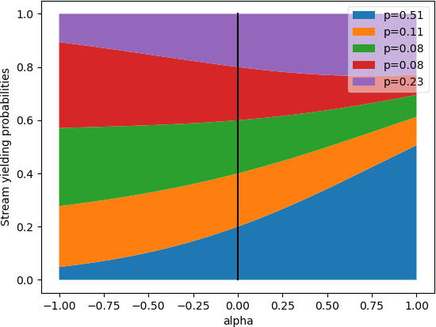

k1lib.cli module
Setup
To install the library, run this in a terminal:
pip install k1lib[all]
If you don’t want to install extra dependencies (not recommended), you can do this instead:
pip install k1lib
To use it in a python file or a notebook, do this:
from k1lib.imports import *
Because there are a lot of functions with common names, you may have custom functions or
classes that have the same name, which will override the functions in the library. If you
want to use them, you can use cli.sort() instead of sort() for example.
Intro
The main idea of this package is to emulate the terminal (hence “cli”, or “command line interface”), but doing all of that inside Python itself. So this bash statement:
cat file.txt | head -5 > headerFile.txt
Turns into this statement:
cat("file.txt") | head(5) > file("headerFile.txt")
Let’s step back a little bit. In the bash statement, “cat” and “head” are actual programs
accessible through the terminal, and “|” will pipe the output of 1 program into another
program. cat file.txt will read a file and returns a list of all rows in it, which
will then be piped into head -5, which will only return the first 5 lines. Finally,
> headerFile.txt will redirect the output to the “headerFile.txt” file. See this video
for more: https://www.youtube.com/watch?v=bKzonnwoR2I
On the Python side, “cat”, “head” and “file” are Python classes extended from BaseCli.
cat("file.txt") will read the file line by line, and return a list of all of them. head(5)
will take in that list and return a list with only the first 5 lines. Finally, > file("headerFile.txt")
will take that in and writes it to a file.
You can even integrate with existing shell commands:
ls("~") | cmd("grep *.so")
Here, “ls” will list out files inside the home directory, then pipes it into regular grep on linux, which is then piped back into Python as a list of strings. So it’s equivalent to this bash statement:
ls | grep *.so
Let’s see a really basic example:
# just a normal function
f = lambda x: x**2
# returns 9, no surprises here
f(3)
# f is now a cli tool
f = aS(lambda x: x**2)
# returns 9, demonstrating that they act like normal functions
f(3)
# returns 9, demonstrating that you can also pipe into them
3 | f
Here, aS is pretty much the simplest cli available. It just makes whatever
function you give it pipe-able, as you can’t quite pipe things to lambda functions in vanilla Python.
You can think of the flow of these clis in terms of 2 phases. 1 is configuring what you want the cli to do, and 2 is actually executing it. Let’s say you want to take a list of numbers and take the square of them:
# configuration stage. You provide a function to `apply` to tell it what function to apply to each element in the list, kinda like Python's "map" function
f = apply(lambda x: x**2)
# initialize the input
x = range(5)
# execution stage, normal style, returns [0, 1, 4, 9, 16]
list(f(x))
# execution stage, pipe style, returns [0, 1, 4, 9, 16]
list(x | f)
# typical usage: combining configuration stage and execution stage, returns [0, 1, 4, 9, 16]
list(range(5) | apply(lambda x: x**2))
# refactor converting to list so that it uses pipes, returns [0, 1, 4, 9, 16]
range(5) | apply(lambda x: x**2) | aS(list)
You may wonder why do we have to turn it into a list. That’s because all cli tools execute things lazily, so they will return iterators, instead of lists. Here’s how iterators work:
def gen(): # this is a generator, a special type of iterator. It generates elements
yield 3
print("after yielding 3")
yield 2
yield 5
for e in gen():
print("in for loop:", e)
It will print this out:
in for loop: 3
after yielding 3
in for loop: 2
in for loop: 5
So, iterators feels like lists. In fact, a list is an iterator, range(5), numpy arrays
and strings are also iterators. Basically anything that you can iterate through is an
iterator. The above iterator is a little special, as it’s specifically called a “generator”.
They are actually a really cool aspect of Python, in terms of they execute code lazily, meaning
gen() won’t run all the way when you call it. In fact, it doesn’t run at all. Only once you
request new elements when trying to iterate over it will the function run.
All cli tools utilize this fact, in terms of they will not actually execute anything unless you force them to:
# returns "<generator object apply.__ror__.<locals>.<genexpr> at 0x7f7ae48e4d60>"
range(5) | apply(lambda x: x**2)
# you can iterate through it directly:
for element in range(5) | apply(lambda x: x**2):
print(element)
# returns [0, 1, 4, 9, 16], in case you want it in a list
list(range(5) | apply(lambda x: x**2))
# returns [0, 1, 4, 9, 16], demonstrating deref
range(5) | apply(lambda x: x**2) | deref()
In the first line, it returns a generator, instead of a normal list, as nothing has actually been
executed. You can still iterate through generators using for loops as usual, or you can convert it
into a list. When you get more advanced, and have iterators nested within iterators within iterators,
you can use deref to turn all of them into lists.
Also, a lot of these tools (like apply and filt)
sometimes assume that we are operating on a table. So this table:
col1 |
col2 |
col3 |
|---|---|---|
1 |
2 |
3 |
4 |
5 |
6 |
Is equivalent to this list:
[["col1", "col2", "col3"], [1, 2, 3], [4, 5, 6]]
Warning
If you’re not an advanced user, just skip this warning.
All cli tools should work fine with torch.Tensor, numpy.ndarray and pandas.core.series.Series,
but k1lib actually modifies Numpy arrays and Pandas series deep down for it to work.
This means that you can still do normal bitwise or with a numpy float value, and
they work fine in all regression tests that I have, but you might encounter strange bugs.
You can disable it manually by changing settings.startup.or_patch like this:
import k1lib
k1lib.settings.startup.or_patch.numpy = False
from k1lib.imports import *
If you choose to do this, you’ll have to be careful and use these workarounds:
torch.randn(2, 3, 5) | shape() # returns (2, 3, 5), works fine
np.random.randn(2, 3, 5) | shape() # will not work, returns weird numpy array of shape (2, 3, 5)
shape()(np.random.randn(2, 3, 5)) # returns (2, 3, 5), mitigation strategy #1
[np.random.randn(2, 3, 5)] | (item() | shape()) # returns (2, 3, 5), mitigation strategy #2
Again, please note that you only need to do these workarounds if you choose to turn off C-type modifications. If you keep things by default, then all examples above should work just fine.
All cli-related settings are at settings.cli.
Argument expansion
I’d like to quickly mention the argument expansion motif that’s prominent in some cli tools. Check out this example:
[3, 5] | aS(lambda a: a[0] + a[1]) # returns 8, long version, not descriptive elements ("a[0]" and "a[1]")
[3, 5] | ~aS(lambda x, y: x + y) # returns 8, short version, descriptive elements ("x" and "y")
[[3, 5], [2, 7]] | apply(lambda a: a[0] + a[1]) | aS(list) # returns [8, 9], long version
[[3, 5], [2, 7]] | ~apply(lambda x, y: x + y) | aS(list) # returns [8, 9], short version
Here, the tilde operator (“~”, officially called “invert” in Python) used on aS and
apply means that the input object/iterator will be expanded so that it fills all
available arguments. This is a small quality-of-life feature, but makes a big difference, as parameters
can now be named separately and nicely (“x” and “y”, which can convey that this is a coordinate of some
sort, instead of “a[0]” and “a[1]”, which conveys nothing).
Inverting conditions
The tilde operator does not always mean expanding the arguments though. Sometimes it’s used for actually inverting the functionality of some clis:
range(5) | filt(lambda x: x % 2 == 0) | aS(list) # returns [0, 2, 4]
range(5) | ~filt(lambda x: x % 2 == 0) | aS(list) # returns [1, 3]
[3, 5.5, "text"] | ~instanceOf(int) | aS(list) # returns [5.5, "text"]
Cli composition
One of the very powerful things about this workflow is that you can easily combine cli tools together, to reach unfathomable levels of complexity while using very little code and still remain relatively readable. For example, this is an image dataloader built pretty much from scratch, but with full functionality comparable to PyTorch’s dataloaders:
base = "~/ssd/data/imagenet/set1/192px"
idxToCat = base | ls() | head(80) | op().split("/")[-1].all() | insertIdColumn() | toDict()
catToIdx = idxToCat.items() | permute(1, 0) | toDict()
# stage 1, (train/valid, classes, samples (url of img))
st1 = base | ls() | head(80) | apply(ls() | splitW()) | transpose() | deref() | aS(k1.Wrapper)
# stage 2, (train/valid, classes, samples, [img, class])
st2 = st1() | (apply(lambda x: [x | toImg() | toTensor(torch.uint8), catToIdx[x.split("/")[-2]]]) | repeatFrom(4) | apply(aS(tf.Resize(192)) | aS(tf.AutoAugment()) | op()/255, 0)).all(2) | deref() | aS(k1.Wrapper)
def dataF(bs): return st2() | apply(repeatFrom().all() | joinStreamsRandom() | batched(bs) | apply(transpose() | aS(torch.stack) + toTensor(torch.long))) | stagger.tv(10000/bs) | aS(list)
These 6 lines of code will read from a directory, grabs all images from the first 80 categories, splits them into train and valid sets. Then it will extend the data infinitely (so that we never run out of batches to train), load the images on multiple worker processes, do augmentations on them, renormalize them, batch them up, stack them together into a tensor, and split batches into multiple epochs.
All of that, from scratch, where you’re in control of every detail, operating in 7 dimensions, in multiple processes, in just 6 lines of code. This is just so ridiculously powerful that it boggles my mind every day. Yes, you can argue that it’s not clear what’s going on, but for a person that is already familiar with them like I do, seeing exactly how data is being transformed at every stage is quite straightforward and trivial.
Serial composition
So let’s see a few examples on how to compose clis together. Let’s say you have a list of files:
fileNames = ["a.txt", "b.txt", "c.txt"]
Let’s say you now want to read every line from every file quickly, using cli tools, and get the number of lines in each file. Instead of something like this:
sizes = []
for fileName in fileNames:
sizes.append(cat(fileName) | shape(0)) # shape(0) is kinda like aS(len). It just returns the length of the input iterator, but difference is that aS(len) can only operate on lists
…which really defeats the purpose of the elegant cli workflow, you can do:
sizes = fileNames | apply(cat() | shape(0)) | aS(list)
In this example, there is 1 “composition”: cat() | shape(0). If you check out the
docs for cat, which is used to read files, you’d know that there’re 2 modes of operation:
cat("a.txt") | shape(0) # mode 1: cat() acts like a function, returning a list of lines in the file
"a.txt" | cat() | shape(0) # mode 2: cat() acts like a cli tool, which will return a list of lines in the file when a file name is piped into it
"a.txt" | (cat() | shape(0)) # mode 2: cat() acts like a cli tool, "cat() | shape(0)" acts as a "serial" cli
s = cat() | shape(0); "a.txt" | s # equivalent to the 3rd line, but this time declaring "cat() | shape(0)" as a separate object
In the second case, "a.txt" | cat() will be executed first, then getting the number of elements will be
executed later (... | shape(0)), but in the third case, cat() | shape(0) will be executed first, which
returns the special cli serial, then the file name will be piped in later ("a.txt" | (...))
Because cli tools are also functions, which includes serial, you can pass them into other cli
tools that expects a function, like apply. You can be extra meta, like this:
# assume a.txt, b.txt, c.txt has 10, 20, 30 lines
fileNames = [["a.txt"], ["b.txt", "c.txt"]]
# returns [[10], [20, 30]]
sizes = fileNames | apply(apply(cat() | shape(0)))
# also returns [[10], [20, 30]], and is equivalent to the line above, as "apply(apply(...))" is equivalent to "(...).all(2)"
sizes = fileNames | (cat() | shape(0)).all(2)
This type of composition is quite straightforward, unlike the next 2.
“&” composition, or “oneToMany”
Take a look at this example:
arr = ["a", "b", "c"]
arr | toRange() # returns range(3), equivalent to [0, 1, 2]
arr | iden() # returns ["a", "b", "c"]
arr | (toRange() & iden()) | aS(list) # returns [range(3), ["a", "b", "c"]]
arr | toRange() & iden() | aS(list) # returns [range(3), ["a", "b", "c"]], demonstrating "&" will be executed before "|", so you don't need parentheses around it
arr | toRange() & iden() | joinStreams() | aS(list) # returns [0, 1, 2, "a", "b", "c"]
So, this will take the input iterator, duplicates into 2 versions, pipes them into the 2 clis you specified and return both of them. You can do this with as much clis as you want:
arr | toRange() & shape() & grep("a") | deref() # returns [[0, 1, 2], [3, 1], ["a"]]
arr | toRange() & (shape() & grep("a")) | deref() # also returns [[0, 1, 2], [3, 1], ["a"]], demonstrating a strange edge case that parentheses won't stop all clis adjacent to each other joined by "&" from combining together
Hopefully it now makes sense why it’s called “oneToMany”, as we’re making 1 iterator available
for many clis. Also, if the exact cli operation is only known at run time, then you can
procedurally do this using oneToMany.
“+” composition, or “mtmS”
Take a look at this example:
even = filt(lambda x: x % 2 == 0)
odd = filt(lambda x: x % 2 == 1) # can also just be "~even", but I'm writing it out this way to be clear
[range(10, 20), range(30, 40)] | (even + odd) | deref() # returns [[10, 12, 14, 16, 18], [31, 33, 35, 37, 39]]
[range(10, 20) | even, range(30, 40) | odd] | deref() # also returns [[10, 12, 14, 16, 18], [31, 33, 35, 37, 39]], demonstrating that these are equivalent to each other
So, let’s say that there’re n items inside of the input iterator and that you specified n
clis. Then, each item will be piped into the corresponding cli, hence the name mtmS, or
“manyToManySpecific”. Why not just “mtm”? Well, there used to be a “manyToMany” operator,
but it’s been removed and I’m lazy to change it back.
Vanilla alternatives
These operations are not actually strictly necessary, they’re just convenience functions so that writing code is simpler and more straightforward. They can be implemented using normal clis like so:
a = iden()
b = apply(lambda x: x**2)
c = shape()
x = [[1, 2], [3, 4], [5, 6]]
x | a + b + c | deref() # returns [[1, 2], [9, 16], [2]]
x | ~aS(lambda x, y, z: [x | a, y | b, z | c]) | deref() # returns [[1, 2], [9, 16], [2]]
x = range(5)
x | a & b & c | deref() # returns [[0, 1, 2, 3, 4], [0, 1, 4, 9, 16], [5]]
x | aS(lambda x: [x | a, x | b, x | c]) | deref() # returns [[0, 1, 2, 3, 4], [0, 1, 4, 9, 16], [5]]
So you might want to use these vanilla versions initially if you’re having a hard time with this, but I wouldn’t recommend using vanilla in the long term.
Where to start?
Core clis include:
These clis are pretty important, and are used all the time, so look over them to see what the library can do. Whenever you find some cli you have not encountered before, you can just search it in the search bar on the top left of the page.
Then other important, not necessarily core clis include:
So, start reading over what these do first, as you can pretty much 95% utilize everything
the cli workflow has to offer with those alone. Then skim over basic conversions in
module conv. While you’re doing that, checkout trace(),
for a quite powerful debugging tool.
There are several written tutorials about cli here, and I also made some video tutorials as well, so go check those out.
For every example in the tutorials that you found, you might find it useful to follow the following debugging steps, to see how everything works:
# assume there's this piece of code:
A | B | C | D
# do this instead:
A | deref()
# once you understand it, do this:
A | B | deref()
# assume there's this piece of code:
A | B.all() | C
# do this instead:
A | item() | B | deref()
# once you understand it, you can move on:
A | B.all() | deref()
# assume there's this piece of code:
A | (B & C)
# do this instead:
A | B | deref()
# assume there's this piece of code:
A | (B + C)
# do these instead:
A | deref() | op()[0] | B | deref()
A | deref() | op()[1] | C | dereF()
# there are alternatives to that:
A | item() | B | deref()
A | rows(1) | item() | C | deref()
Finally, you can read over the summary below, see what catches your eye and check that cli out.
Summary
structural |
utils |
conv |
typehint |
filt |
|---|---|---|---|---|
|
||||
|
||||
|
||||
|
||||
modifier |
init |
inp |
output |
kxml |
|---|---|---|---|---|
|
||||
|
||||
nb |
grep |
kcsv |
trace |
optimizations |
|---|---|---|---|---|
Under the hood
How it works underneath is pretty simple. All cli tools implement the “reverse or” operation, or __ror__. So essentially, these 2 statements are equivalent:
3 | obj
obj.__ror__(3)
There are several other operations that certain clis can override, like “>” or “>>”. Also, if you’re an advanced user, there’s also an optimizer that looks like LLVM, so you can implement optimization passes to speed up everything by a lot:
Creating your own cli
It’s fairly simple to create your new cli. If it’s composed of other clis, you can do something like this:
newCli = filt(lambda x: x%2==0) | head(4) | deref()
range(10) | newCli # returns [0, 2, 4, 6]
If it’s more complicated that needs to have access to some state, like a sum of numbers,
then you can extend from BaseCli like so:
class NewCli(BaseCli):
def __init__(self, bias=0):
self.bias = bias # don't necessarily have to call super.__init__()
def __ror__(self, it):
s = self.bias
for elem in it:
s += elem
return s
[range(12, 30), range(8)] | NewCli(4).all() | deref() # returns [373, 32]
bio module
This is for functions that are actually biology-related
- k1lib.cli.bio.quality(log=True)[source]
Get numeric quality of sequence. Example:
# returns [2, 2, 5, 30] "##&?" | quality() | deref()
- Parameters
log – whether to use log scale (0 -> 40), or linear scale (1 -> 0.0001)
- k1lib.cli.bio.longFa()[source]
Takes in a fasta file and put each sequence on 1 line. File “gene.fa”:
>AF086833.2 Ebola virus - Mayinga, Zaire, 1976, complete genome CGGACACACAAAAAGAAAGAAGAATTTTTAGGATC TTTTGTGTGCGAATAACTATGAGGAAGATTAATAA >something other gene CGGACACACAAAAAGAAAGAAGA TTTTGTGTGCGAATAACTATGAG
Code:
cat("gene.fa") | bio.longFa() | cli.headOut()
Prints out:
>AF086833.2 Ebola virus - Mayinga, Zaire, 1976, complete genome CGGACACACAAAAAGAAAGAAGAATTTTTAGGATCTTTTGTGTGCGAATAACTATGAGGAAGATTAATAA >something other gene CGGACACACAAAAAGAAAGAAGATTTTGTGTGCGAATAACTATGAG
- class k1lib.cli.bio.idx(fs: list = [])[source]
Bases:
BaseCliIndexes files with various formats.
- static blast(fileName: Optional[str] = None, dbtype: Optional[str] = None)[source]
Uses
makeblastdbto create a blast database from a fasta file. Example:"file.fa" | bio.idx.blast() bio.idx.blast("file.fa")
- class k1lib.cli.bio.transcribe(fs: list = [])[source]
Bases:
BaseCliTranscribes (DNA -> RNA) incoming rows. Example:
# returns "AUCG" "ATCG" | transcribe() # returns ["AUCG"] ["ATCG"] | transcribe() | deref()
- class k1lib.cli.bio.complement(fs: list = [])[source]
Bases:
BaseCliGet the reverse complement of DNA. Example:
# returns "TAGC" "ATCG" | bio.complement() # returns ["TAGC"] ["ATCG"] | bio.complement() | deref()
- class k1lib.cli.bio.translate(length: int = 0)[source]
Bases:
BaseCli
cif module
All tools related to cif file format that describes protein structures. Expected to use behind the “cif” module name, like this:
from k1lib.imports import *
cif.cat("abc.cif")
- k1lib.cli.cif.tables(name=None, dikt=True)[source]
Loads table info. Dictionary mode:
# both return output below "1z7z.cif" | cif.tables() | op()["_audit_author"] "1z7z.cif" | cif.tables("_audit_author")
Potential output:
{'name': ("'Xiao, C.'", "'Bator-Kelly, C.M.'", "'Rieder, E.'", "'Chipman, P.R.'", "'Craig, A.'", "'Kuhn, R.J.'", "'Wimmer, E.'", "'Rossmann, M.G.'"), 'pdbx_ordinal': ('1', '2', '3', '4', '5', '6', '7', '8')}
Result is a dictionary of
table name -> dict(). That inner dictionary maps from column name to a list of elements. All columns should have the same number of elements.Table mode:
# both return output below "1z7z.cif" | cif.tables("_audit_author", dikt=False) "1z7z.cif" | cif.tables(dikt=False) | op()["_audit_author"]
Potential output:
[['name', 'pdbx_ordinal'], ["'Xiao, C.'", '1'], ["'Bator-Kelly, C.M.'", '2'], ["'Rieder, E.'", '3'], ["'Chipman, P.R.'", '4'], ["'Craig, A.'", '5'], ["'Kuhn, R.J.'", '6'], ["'Wimmer, E.'", '7'], ["'Rossmann, M.G.'", '8']]
Result is a dictionary of
table name -> List[List[str]]. So basically you’re getting the table directly.- Parameters
name – if specified, only grabs the specified table, else returns every table
dikt – whether to return a dict or table for each table
conv module
This is for all short utilities that converts from 1 data type to another. They
might feel they have different styles, as toFloat converts object iterator to
float iterator, while toPIL converts single image url to single PIL image,
whereas toSum converts float iterator into a single float value.
The general convention is, if the intended operation sounds simple (convert to floats, strings, types, …), then most likely it will convert iterator to iterator, as you can always use the function directly if you only want to apply it on 1 object.
If it sounds complicated (convert to PIL image, tensor, …) then most likely it will convert object to object. Lastly, there are some that just feels right to input an iterator and output a single object (like getting max, min, std, mean values).
- class k1lib.cli.conv.toTensor(dtype=torch.float32)[source]
Bases:
BaseCli- __init__(dtype=torch.float32)[source]
Converts generator to
torch.Tensor. Essentiallytorch.tensor(list(it)).Also checks if input is a PIL Image. If yes, turn it into a
torch.Tensorand return.
- class k1lib.cli.conv.toRange[source]
Bases:
BaseCli
- class k1lib.cli.conv.toList[source]
Bases:
BaseCli- __init__()[source]
Converts generator to list. Example:
# returns [0, 1, 2, 3, 4] range(5) | toList() # returns [0, 1, 2, 3, 4] range(5) | aS(list)
So this cli is sort of outdated. It still works fine, nothing wrong with it, but just do
aS(list)instead. It’s not removed to avoid breaking old projects.
- class k1lib.cli.conv.toSum[source]
Bases:
BaseCli- __init__()[source]
Calculates the sum of list of numbers. Can pipe in
torch.Tensorornumpy.ndarray. Example:# returns 45 range(10) | toSum()
- class k1lib.cli.conv.toProd[source]
Bases:
BaseCli- __init__()[source]
Calculates the product of a list of numbers. Can pipe in
torch.Tensorornumpy.ndarray. Example:# returns 362880 range(1,10) | toProd()
- class k1lib.cli.conv.toAvg[source]
Bases:
BaseCli- __init__()[source]
Calculates average of list of numbers. Can pipe in
torch.Tensorornumpy.ndarray. Example:# returns 4.5 range(10) | toAvg() # returns nan [] | toAvg()
- class k1lib.cli.conv.toMax[source]
Bases:
BaseCli- __init__()[source]
Calculates the max of a bunch of numbers. Can pipe in
torch.Tensorornumpy.ndarray. Example:# returns 6 [2, 5, 6, 1, 2] | toMax()
- class k1lib.cli.conv.toMin[source]
Bases:
BaseCli- __init__()[source]
Calculates the min of a bunch of numbers. Can pipe in
torch.Tensorornumpy.ndarray. Example:# returns 1 [2, 5, 6, 1, 2] | toMin()
- class k1lib.cli.conv.toPIL(closeFig=True, crop=True)[source]
Bases:
BaseCli- __init__(closeFig=True, crop=True)[source]
Converts multiple data types into a PIL image. Example:
# grabs first image in the current folder ls(".") | toPIL().all() | item() # converts from tensor/array to image torch.randn(100, 200) | toPIL() # grabs image, converts to byte stream, and converts back to image "abc.jpg" | toPIL() | toBytes() | toPIL() # converts paragraphs to image ["abc", "def"] | toPIL() # converts SMILES string to molecule, then to image "c1ccc(C)cc1" | toMol() | toImg()
You can also save a matplotlib figure by piping in a
matplotlib.figure.Figureobject:x = np.linspace(0, 4) plt.plot(x, x**2) plt.gcf() | toPIL()
Note
If you are working with image tensors, which is typically have dimensions of (C, H, W), you have to permute it to PIL’s (H, W, C) first before passing it into this cli.
Also it’s expected that your tensor image ranges from 0-255, and not 0-1. Make sure you renormalize it
- Parameters
closeFig – if input is a matplotlib figure, then closes the figure after generating the image
crop – whether to crop white spaces around an image or not
- class k1lib.cli.conv.toRgb[source]
Bases:
BaseCli
- class k1lib.cli.conv.toRgba[source]
Bases:
BaseCli
- class k1lib.cli.conv.toGray[source]
Bases:
BaseCli
- class k1lib.cli.conv.toDict(rows=True)[source]
Bases:
BaseCli
- class k1lib.cli.conv.toFloat(*columns, mode=2)[source]
Bases:
BaseCli- __init__(*columns, mode=2)[source]
Converts every row into a float. Example:
# returns [1, 3, -2.3] ["1", "3", "-2.3"] | toFloat() | deref() # returns [[1.0, 'a'], [2.3, 'b'], [8.0, 'c']] [["1", "a"], ["2.3", "b"], [8, "c"]] | toFloat(0) | deref()
With weird rows:
# returns [[1.0, 'a'], [8.0, 'c']] [["1", "a"], ["c", "b"], [8, "c"]] | toFloat(0) | deref() # returns [[1.0, 'a'], [0.0, 'b'], [8.0, 'c']] [["1", "a"], ["c", "b"], [8, "c"]] | toFloat(0, force=True) | deref()
This also works well with
torch.Tensorandnumpy.ndarray, as they will not be broken up into an iterator:# returns a numpy array, instead of an iterator np.array(range(10)) | toFloat()
- Parameters
columns – if nothing, then will convert each row. If available, then convert all the specified columns
mode – different conversion styles - 0: simple
float()function, fastest, but will throw errors if it can’t be parsed - 1: if there are errors, then replace it with zero - 2: if there are errors, then eliminate the row
- class k1lib.cli.conv.toInt(*columns, mode=2)[source]
Bases:
BaseCli- __init__(*columns, mode=2)[source]
Converts every row into an integer. Example:
# returns [1, 3, -2] ["1", "3", "-2.3"] | toInt() | deref()
- Parameters
columns – if nothing, then will convert each row. If available, then convert all the specified columns
mode – different conversion styles - 0: simple
float()function, fastest, but will throw errors if it can’t be parsed - 1: if there are errors, then replace it with zero - 2: if there are errors, then eliminate the row
See also:
toFloat()
- class k1lib.cli.conv.toBytes(imgType='JPEG')[source]
Bases:
BaseCli- __init__(imgType='JPEG')[source]
Converts several object types to bytes. Example:
# converts string to bytes "abc" | toBytes() # converts image to base64 bytes torch.randn(200, 100) | toImg() | toBytes()
- Parameters
imgType – if input is an image then this is the image type. Can change to “PNG” or sth like that
mgi module
All tools related to the MGI database. Expected to use behind the “mgi” module name, like this:
from k1lib.imports import *
["SOD1", "AMPK"] | mgi.batch()
filt module
This is for functions that cuts out specific parts of the table
- class k1lib.cli.filt.filt(predicate: Callable[[T], bool], column: Optional[int] = None, catchErrors: bool = False)[source]
Bases:
BaseCli- __init__(predicate: Callable[[T], bool], column: Optional[int] = None, catchErrors: bool = False)[source]
Filters out elements. Examples:
# returns [2, 6], grabbing all the even elements [2, 3, 5, 6] | filt(lambda x: x%2 == 0) | deref() # returns [3, 5], grabbing all the odd elements [2, 3, 5, 6] | ~filt(lambda x: x%2 == 0) | deref() # returns [[2, 'a'], [6, 'c']], grabbing all the even elements in the 1st column [[2, "a"], [3, "b"], [5, "a"], [6, "c"]] | filt(lambda x: x%2 == 0, 0) | deref() # throws error, because strings can't mod divide [1, 2, "b", 8] | filt(lambda x: x % 2 == 0) | deref() # returns [2, 8] [1, 2, "b", 8] | filt(lambda x: x % 2 == 0, catchErrors=True) | deref()
You can also pass in
op, for extra intuitiveness:# returns [2, 6] [2, 3, 5, 6] | filt(op() % 2 == 0) | deref() # returns ['abc', 'a12'] ["abc", "def", "a12"] | filt(op().startswith("a")) | deref() # returns [3, 4, 5, 6, 7, 8, 9] range(100) | filt(3 <= op() < 10) | deref()
If you pass in
numpy.ndarrayortorch.Tensor, then it will automatically use the C-accelerated versions if possible, like this:# returns np.array([2, 3, 4]), instead of iter([2, 3, 4]) np.array([1, 2, 3, 4]) | filt(lambda x: x>=2) | deref() # returns [2, 3, 4], instead of np.array([2, 3, 4]), because `math.exp` can't operate on numpy arrays np.array([1, 2, 3, 4]) | filt(lambda x: math.exp(x) >= 3) | deref()
If you need more extensive filtering capabilities involving text, check out
grepIf “filt” is too hard to remember, this cli also has an alias
filter_that kinda mimics Python’sfilter().- Parameters
predicate – function that returns True or False
column – if not specified, then filters elements of the input array, else filters the specific column only
catchErrors – whether to catch errors in the function or not (reject elements that raise errors). Runs slower if enabled though
- split()[source]
Splits the input into positive and negative samples. Example:
# returns [[0, 2, 4, 6, 8], [1, 3, 5, 7, 9]] range(10) | filt(lambda x: x%2 == 0).split() | deref() # also returns [[0, 2, 4, 6, 8], [1, 3, 5, 7, 9]], exactly like above range(10) | filt(lambda x: x%2 == 0) & filt(lambda x: x%2 != 0) | deref()
- k1lib.cli.filt.inSet(values: Set[Any], column: Optional[int] = None) filt[source]
Filters out lines that is not in the specified set. Example:
# returns [2, 3] range(5) | inSet([2, 8, 3]) | deref() # returns [0, 1, 4] range(5) | ~inSet([2, 8, 3]) | deref()
- k1lib.cli.filt.contains(s: str, column: Optional[int] = None) filt[source]
Filters out lines that don’t contain the specified substring. Sort of similar to
grep, but this is simpler, and can be inverted. Example:# returns ['abcd', '2bcr'] ["abcd", "0123", "2bcr"] | contains("bc") | deref()
- class k1lib.cli.filt.empty(reverse=False)[source]
Bases:
BaseCli- __init__(reverse=False)[source]
Filters out streams that is not empty. Almost always used inverted, but “empty” is a short, sweet name that’s easy to remember. Example:
# returns [[1, 2], ['a']] [[], [1, 2], [], ["a"]] | ~empty() | deref()
- Parameters
reverse – not intended to be used by the end user. Do
~empty()instead.
- k1lib.cli.filt.isNumeric(column: Optional[int] = None) filt[source]
Filters out a line if that column is not a number. Example:
# returns [0, 2, '3'] [0, 2, "3", "a"] | isNumeric() | deref()
- k1lib.cli.filt.instanceOf(cls: Union[type, Tuple[type]], column: Optional[int] = None) filt[source]
Filters out lines that is not an instance of the given type. Example:
# returns [2] [2, 2.3, "a"] | instanceOf(int) | deref() # returns [2, 2.3] [2, 2.3, "a"] | instanceOf((int, float)) | deref()
- class k1lib.cli.filt.head(n=10)[source]
Bases:
BaseCli- __init__(n=10)[source]
Only outputs first
nelements. You can also negate it (like~head(5)), which then only outputs after firstnlines. Examples:"abcde" | head(2) | deref() # returns ["a", "b"] "abcde" | ~head(2) | deref() # returns ["c", "d", "e"] "0123456" | head(-3) | deref() # returns ['0', '1', '2', '3'] "0123456" | ~head(-3) | deref() # returns ['4', '5', '6'] "012" | head(None) | deref() # returns ['0', '1', '2'] "012" | ~head(None) | deref() # returns []
You can also pass in fractional head:
range(20) | head(0.25) | deref() # returns [0, 1, 2, 3, 4], or the first 25% of samples
Also works well and fast with
numpy.ndarray,torch.Tensorand other sliceable types:# returns (10,) np.linspace(1, 3) | head(10) | shape()
- k1lib.cli.filt.tail(n: int = 10)[source]
Basically an inverted
head. Examples:range(10) | tail(3) | deref() # returns [7, 8, 9]
- class k1lib.cli.filt.cut(*columns: List[int])[source]
Bases:
BaseCli- __init__(*columns: List[int])[source]
Cuts out specific columns, sliceable. Examples:
["0123456789", "abcdefghij"] | cut(5, 8) | deref() # returns [['5', '8'], ['f', 'i']] ["0123456789"] | cut(5, 8) | deref() # returns [['5', '8']] ["0123456789"] | cut(8, 5) | deref() # returns [['8', '5']], demonstrating permutation-safe ["0123456789", "abcdefghij"] | cut(2) | deref() # returns ['2', 'c'], instead of [['2'], ['c']] as usual ["0123456789"] | cut(2) | deref() # returns ['2'] ["0123456789"] | cut(5, 8) | deref() # returns [['5', '8']] ["0123456789"] | ~cut()[:7:2] | deref() # returns [['1', '3', '5', '7', '8', '9']]
In the first example, you can imagine that we’re operating on this table:
0123456789 abcdefghij
Then, we want to grab the 5th and 8th column (0-indexed), which forms this table:
58 fi
So, result of that is just
[['5', '8'], ['f', 'i']]In the fourth example, if you’re only cutting out 1 column, then it will just grab that column directly, instead of putting it in a list.
If you pass in
numpy.ndarrayortorch.Tensor, then it will automatically use the C-accelerated versions, like this:torch.randn(4, 5, 6) | cut(2, 3) # returns tensor of shape (4, 2, 6) torch.randn(4, 5, 6) | cut(2) # returns tensor of shape (4, 6) torch.randn(4, 5, 6) | ~cut()[2:] # returns tensor of shape (4, 2, 6)
- class k1lib.cli.filt.rows(*rows: List[int])[source]
Bases:
BaseCli- __init__(*rows: List[int])[source]
Selects specific elements given an iterator of indexes. Space complexity O(1) as a list is not constructed (unless you’re slicing it in really weird way). Example:
"0123456789" | rows(2) | toList() # returns ["2"] "0123456789" | rows(5, 8) | toList() # returns ["5", "8"] "0123456789" | rows()[2:5] | toList() # returns ["2", "3", "4"] "0123456789" | ~rows()[2:5] | toList() # returns ["0", "1", "5", "6", "7", "8", "9"] "0123456789" | ~rows()[:7:2] | toList() # returns ['1', '3', '5', '7', '8', '9'] "0123456789" | rows()[:-4] | toList() # returns ['0', '1', '2', '3', '4', '5'] "0123456789" | ~rows()[:-4] | toList() # returns ['6', '7', '8', '9']
Why it’s called “rows” is because I couldn’t find a good name for it. There was
cut, which the name of an actual bash cli that selects out columns given indicies. When I needed a way to do what this cli does, it was in the context of selecting out rows, so the name stuck.- Parameters
rows – ints for the row indices
- class k1lib.cli.filt.intersection(column=None)[source]
Bases:
BaseCli- __init__(column=None)[source]
Returns the intersection of multiple streams. Example:
# returns set([2, 4, 5]) [[1, 2, 3, 4, 5], [7, 2, 4, 6, 5]] | intersection() # returns ['2g', '4h', '5j'] [["1a", "2b", "3c", "4d", "5e"], ["7f", "2g", "4h", "6i", "5j"]] | intersection(0) | deref()
- Parameters
column – what column to apply the intersection on. Defaulted to None
- class k1lib.cli.filt.union[source]
Bases:
BaseCli
- class k1lib.cli.filt.unique(column: Optional[int] = None)[source]
Bases:
BaseCli- __init__(column: Optional[int] = None)[source]
Filters out non-unique row elements. Example:
# returns [[1, "a"], [2, "a"]] [[1, "a"], [2, "a"], [1, "b"]] | unique(0) | deref() # returns [0, 1, 2, 3, 4] [*range(5), *range(3)] | unique() | deref()
In the first example, because the 3rd element’s first column is 1, which has already appeared, so it will be filtered out.
- Parameters
column – the column to detect unique elements. Can be None, which will behave like converting the input iterator into a set, but this cli will maintain the order
- class k1lib.cli.filt.breakIf(f)[source]
Bases:
BaseCli
- class k1lib.cli.filt.mask(mask: Iterator[bool])[source]
Bases:
BaseCli
- class k1lib.cli.filt.tryout(result=None)[source]
Bases:
BaseCli- end = <object object>
- __init__(result=None)[source]
Wraps every cli operation after this in a try-catch block, returning
result. This can be a little finicky. Example:# returns 9 3 | (tryout("failed") | op()**2) # returns "failed", instead of raising an exception "3" | (tryout("failed") | op()**2) # returns "unsupported operand type(s) for ** or pow(): 'str' and 'int'" "3" | (tryout(Exception) | op()**2)
By default, this
tryout()object will gobble up all clis behind it and wrap them inside a try-catch block. This might be undesirable, so you can stop it early:# returns "failed" 3 | (tryout("failed") | op()**2 | aS(str) | op()**2) # raises an exception, because it does not errors after `tryout.end` 3 | (tryout("failed") | op()**2 | tryout.end | aS(str) | op()**2)
- Parameters
result – result to return if there is an exception. If passed in the class Exception, then will return the exception’s string instead
gb module
All tools related to GenBank file format. Expected to use behind the “gb” module name, like this:
from k1lib.imports import *
cat("abc.gb") | gb.feats()
- class k1lib.cli.gb.feats(fs: list = [])[source]
Bases:
BaseCliFetches features, each on a separate stream. Example:
cat("a.gb") | gb.feats()
Output example:
[[' source 1..248956422', ' /organism="Homo sapiens"', ' /mol_type="genomic DNA"', ' /db_xref="taxon:9606"', ' /chromosome="1"'], [' gene 11874..14409', ' /gene="DDX11L1"', ' /note="DEAD/H-box helicase 11 like 1 (pseudogene); Derived', ' by automated computational analysis using gene prediction', ' method: BestRefSeq."', ' /pseudo', ' /db_xref="GeneID:100287102"', ' /db_xref="HGNC:HGNC:37102"']]
- static filt(*terms: str) BaseCli[source]
Filters for specific terms in all the features texts. If there are multiple terms, then filters for first term, then second, then third, so the term’s order might matter to you. Example:
[[' source 1..248956422', ' /organism="Homo sapiens"', ' /mol_type="genomic DNA"', ' /db_xref="taxon:9606"', ' /chromosome="1"'], [' gene 11874..14409', ' /gene="DDX11L1"', ' /note="DEAD/H-box helicase 11 like 1 (pseudogene); Derived', ' by automated computational analysis using gene prediction', ' method: BestRefSeq."', ' /pseudo', ' /db_xref="GeneID:100287102"', ' /db_xref="HGNC:HGNC:37102"']] | gb.feats.filt("mol_type")
Output:
[[' source 1..248956422', ' /organism="Homo sapiens"', ' /mol_type="genomic DNA"', ' /db_xref="taxon:9606"', ' /chromosome="1"']]
- static root() BaseCli[source]
Gets root (top most unnamed tag) of a feature. Example:
[' misc_RNA complement(join(14362..14829,14970..15038,15796..15947,', ' 16607..16765,16858..17055,17233..17368,17606..17742,', ' 17915..18061,18268..18366,24738..24891,29321..29370))', ' /gene="WASH7P"', ' /gene_synonym="FAM39F; WASH5P"', ' /product="WASP family homolog 7, pseudogene"', ' /note="Derived by automated computational analysis using', ' gene prediction method: BestRefSeq."', ' /pseudo', ' /transcript_id="NR_024540.1"', ' /db_xref="GeneID:653635"', ' /db_xref="HGNC:HGNC:38034"'] | feats.root()
Output:
['misc_RNA', ['complement(join(14362..14829,14970..15038,15796..15947,', '16607..16765,16858..17055,17233..17368,17606..17742,', '17915..18061,18268..18366,24738..24891,29321..29370))']]
- static tags(*tags: List[str]) BaseCli[source]
Grabs a list of tags. Example:
s = [' misc_RNA complement(join(14362..14829,14970..15038,15796..15947,', ' 16607..16765,16858..17055,17233..17368,17606..17742,', ' 17915..18061,18268..18366,24738..24891,29321..29370))', ' /gene="WASH7P"', ' /gene_synonym="FAM39F; WASH5P"', ' /product="WASP family homolog 7, pseudogene"', ' /note="Derived by automated computational analysis using', ' gene prediction method: BestRefSeq."', ' /pseudo', ' /transcript_id="NR_024540.1"', ' /db_xref="GeneID:653635"', ' /db_xref="HGNC:HGNC:38034"'] s | feats.tags()
Output:
[['gene', 'WASH7P'], ['gene_synonym', 'FAM39F; WASH5P'], ['product', 'WASP family homolog 7, pseudogene'], ['note', 'Derived by automated computational analysis using gene prediction method: BestRefSeq.'], ['pseudo', ''], ['transcript_id', 'NR_024540.1'], ['db_xref', 'GeneID:653635'], ['db_xref', 'HGNC:HGNC:38034']]
With filters:
# returns [['gene', 'WASH7P'], ['db_xref', 'HGNC:HGNC:38034'], ['organism', '']] s | feats.tags("gene", "db_xref", "organism")
grep module
- class k1lib.cli.grep.grep(pattern: Union[str, Callable[[Any], bool]], before: int = 0, after: int = 0, N: int = inf, sep: bool = False, col: Optional[int] = None)[source]
Bases:
BaseCli- __init__(pattern: Union[str, Callable[[Any], bool]], before: int = 0, after: int = 0, N: int = inf, sep: bool = False, col: Optional[int] = None)[source]
Find lines that has the specified pattern. Example:
# returns ['d', 'd'] "abcde12d34" | grep("d") | deref() # returns ['c', 'd', '2', 'd'], 2 sections of ['c', 'd'] and ['2', 'd'] "abcde12d34" | grep("d", 1) | deref() # returns ['c', 'd'] "abcde12d34" | grep("d", 1, N=1) | deref() # returns ['d', 'e', 'd', '3', '4'], 2 sections of ['d', 'e'] and ['d', '3', '4'] "abcde12d34" | grep("d", 0, 3).till("e") | deref() # returns [['0', '1', '2'], ['3', '1', '4']] "0123145" | grep("1", 2, 1, sep=True) | deref()
You can also separate out the sections:
# returns [['c', 'd'], ['2', 'd']] "abcde12d34" | grep("d", 1, sep=True) | deref() # returns [['c', 'd']] "abcde12d34" | grep("d", 1, N=1, sep=True) | deref() # returns [['1', '2', '3'], ['1', '4', '5']] "0123145" | grep("1", sep=True).till() | deref()
You can also put in predicates instead of regex patterns:
# returns ['d', 'd'] "abcde12d34" | grep(lambda x: x == "d") | deref() # also returns ['d', 'd'] "abcde12d34" | filt(lambda x: x == "d") | deref() # returns ['d', 'e', 'd', '3', '4'] "abcde12d34" | grep(lambda x: x == "d").till(lambda x: x == "e") | deref()
The first scenario looks like a regular filter function, already implemented by
filt, butgrepbrings in more clustering features for the price of reduced execution speed. So for simple scenarios it’s advised that you usefilt.See also:
groupByAlso, there’s a whole tutorial devoted to just this cli
Also also, if each element in the input iterator is not a string/bytes, and you’re searching using regex, then it will get its representation and searches in it.
- Parameters
pattern – regex pattern to search for in a line
before – lines before the hit. Outputs independent lines
after – lines after the hit. Outputs independent lines
N – max sections to output
sep – whether to separate out the sections as lists
col – searches for pattern in a specific column
- till(pattern: Optional[Union[str, Callable[[Any], bool]]] = None)[source]
Greps until some other pattern appear. Inclusive, so you might want to trim the last line. Example:
# returns ['5', '6', '7', '8'], includes last item range(10) | join("") | grep("5").till("8") | deref() # returns ['d', 'e', 'd', '3', '4'] "abcde12d34" | grep("d").till("e") | deref() # returns ['d', 'e'] "abcde12d34" | grep("d", N=1).till("e") | deref()
If initial pattern and till pattern are the same, then you don’t have use this method at all. Instead, do something like this:
# returns ['1', '2', '3'] "0123145" | grep("1", after=1e9, N=1) | deref()
init module
- class k1lib.cli.init.BaseCli(fs: list = [])[source]
Bases:
objectA base class for all the cli stuff. You can definitely create new cli tools that have the same feel without extending from this class, but advanced stream operations (like
+,&,.all(),|) won’t work.At the moment, you don’t have to call super().__init__() and super().__ror__(), as __init__’s only job right now is to solidify any
oppassed to it, and __ror__ does nothing.- __init__(fs: list = [])[source]
Not expected to be instantiated by the end user.
fs param
Expected to use it like this:
class A(BaseCli): def __init__(self, f): fs = [f]; super().__init__(fs); self.f = fs[0]
Where
fis some (potentially exotic) function. This will replace f with a “normal” function that’s executable. See source code offiltfor an example of why this is useful. Currently, it will:
- property hasHint
- __and__(cli: BaseCli) oneToMany[source]
Duplicates input stream to multiple joined clis. Example:
# returns [[5], [0, 1, 2, 3, 4]] range(5) | (shape() & iden()) | deref()
Kinda like
apply. There’re just multiple ways of doing this. This I think, is more intuitive, andapplyis more for lambdas and columns mode. Performances are pretty much identical.
- __add__(cli: BaseCli) mtmS[source]
Parallel pass multiple streams to multiple clis. Example:
# returns [8, 15] [2, 3] | ((op() * 4) + (op() * 5)) | deref()
- all(n: int = 1) BaseCli[source]
Applies this cli to all incoming streams. Example:
# returns (3,) torch.randn(3, 4) | toMean().all() | shape() # returns (3, 4) torch.randn(3, 4, 5) | toMean().all(2) | shape()
- Parameters
n – how many times should I chain
.all()?
- __or__(cli) serial[source]
Joins clis end-to-end. Example:
c = apply(op() ** 2) | deref() # returns [0, 1, 4, 9, 16] range(5) | c
- k1lib.cli.init.yieldT
Object often used as a sentinel, or an identifying token in lots of clis, including that can be yielded in a stream to ignore this stream for the moment in
joinStreamsRandom,deref,tCheckandtOpt
- k1lib.cli.init.fastF(c, x=None)[source]
Tries to figure out what’s going on, is it a normal function, or an applyS, or a BaseCli, etc., and return a really fast function for execution. Example:
# both returns 16, fastF returns "lambda x: x**2", so it's really fast fastF(op()**2)(4) fastF(applyS(lambda x: x**2))(4)
At the moment, parameter
xdoes nothing, but potentially in the future, you can pass in an example input to the cli, so that this returns an optimized, C compiled version.- Parameters
x – sample data for the cli
- class k1lib.cli.init.serial(*clis: List[BaseCli])[source]
Bases:
BaseCli
- class k1lib.cli.init.oneToMany(*clis: List[BaseCli])[source]
Bases:
BaseCli- __init__(*clis: List[BaseCli])[source]
Duplicates 1 stream into multiple streams, each for a cli in the list. Used in the “a & b” joining operator. See also:
BaseCli.__and__()
- class k1lib.cli.init.mtmS(*clis: List[BaseCli])[source]
Bases:
BaseCli- __init__(*clis: List[BaseCli])[source]
Applies multiple streams to multiple clis independently. Used in the “a + b” joining operator. See also:
BaseCli.__add__().Weird name is actually a shorthand for “many to many specific”.
- static f(f, i: int, n: int = 100)[source]
Convenience method, so that this:
mtmS(iden(), op()**2, iden(), iden(), iden()) # also the same as this btw: (iden() + op()**2 + iden() + iden() + iden())
is the same as this:
mtmS.f(op()**2, 1, 5)
Example:
# returns [5, 36, 7, 8, 9] range(5, 10) | mtmS.f(op()**2, 1, 5) | deref()
- Parameters
i – where should I put the function?
n – how many clis in total? Defaulted to 100
- k1lib.cli.init.patchDict()[source]
Patches dictionaries’s items and keys, so that piping works:
d = {"a": 3, "b": 4} d.keys() | deref() # returns ["a", "b"] d.items() | deref() # returns [["a", 3], ["b", 4]]
- k1lib.cli.init.patchNumpy()[source]
Patches numpy arrays and data types, so that piping like this work:
a = np.random.randn(3) a | shape() # returns (3,)
- k1lib.cli.init.patchPandas()[source]
Patches panda’s
pandas.core.series.Seriesandpandas.core.frame.DataFrameso that piping works:pd.read_csv("a.csv")["col3"] | shape()
inp module
This module for tools that will likely start the processing stream.
- cat.pickle(pickleModule=<module 'dill' from '/home/kelvin/anaconda3/envs/torch/lib/python3.9/site-packages/dill/__init__.py'>)
Reads a file as a series of pickled objects. Example:
"ab" | aS(dill.dumps) | file("test/catTest.pth") "cd" | aS(dill.dumps) >> file("test/catTest.pth") # append to the file # returns ["ab", "cd"] cat.pickle("test/catTest.pth") | deref() # also returns ["ab", "cd"], same style as :class:`cat` "test/catTest.pth" | cat.pickle() | deref()
- Parameters
fileName – name of the pickled file
pickleModule – pickle module to use. Python’s default is “pickle”, but I usually use
dillbecause it’s more robust
- k1lib.cli.inp.cat(fileName: Optional[str] = None, text: bool = True, chunks: Optional[bool] = None, profile: bool = False, sB=0, eB=-1)[source]
Reads a file line by line. Example:
# display first 10 lines of file cat("file.txt") | headOut() # piping in also works "file.txt" | cat() | headOut() # read bytes from an image file and dumps it to another file cat("img.png", False) | file("img2.png")
If you want to read only specific sections of the file, you can specify the start (
sB) and end byte (eB) like this:"123456\n89" | file("test/catTest.pth") # returns ['3456', '8'] cat("test/catTest.pth", sB=2, eB=8) | deref() settings.cat.context.chunkSize=3 # just for demonstration, don't do it normally # returns [b'123', b'456', b'\n8'] cat("test/catTest.pth", text=False, chunks=True, eB=8) | deref()
If you are working with large files and would like to read 1 file from multiple threads/processes, then you can use this cli in conjunction with
splitSeek.If you are dumping multiple pickled objects into a single file, you can read all of them using
cat.pickle().This cli has lots of settings at
settings.cli.cat- Parameters
fileName – if None, then return a
BaseClithat accepts a file name and outputs Iterator[str]text – if True, read text file, else read binary file
chunks – if True then reads the file chunk by chunk, else reads the entire file. Defaults to True in text mode and False in binary mode
profile – whether to profile the file reading rate or not. Can adjust printing frequency using settings.cli.cat.every
sB – “start byte”. Specify this if you want to start reading from this byte
eB – “end byte”, inclusive. Default -1 means end of file
- class k1lib.cli.inp.splitSeek(n, c=b'\n')[source]
Bases:
BaseCli- __init__(n, c=b'\n')[source]
Splits a file up into n fragments aligned to the closest character and return the seek points. Example:
# preparing the large file range(120) | apply(lambda x: f"{x:3}_56789") | file("test/largeFile.txt") # returns [0, 30, 70, 110, 150, 190, 230, 270, 300, 340] "test/largeFile.txt" | splitSeek(31) | head() # returns 32 "test/largeFile.txt" | splitSeek(31) | shape(0) # returns 32, demonstrating you can also pipe file objects in, if that's what you want open("test/largeFile.txt") | splitSeek(31) | shape(0) # returns [0, 0, 10, 10, 20, 30, 30, 40, 40, 50], notice some segments have zero length "test/largeFile.txt" | splitSeek(200) | head()
So, the generated file has 120 lines in total. Each line is 10 bytes (9 for the string, and 1 for the new line character). Splitting the file into 31 fragments will result in 32 seek points (\(p_i\quad i\in[1, n+1]\)). You can then use these seek points to read the file in multiple threads/processes using
cat(), like this:# returns [[' 0_56789', ' 1_56789', ' 2_56789'], [' 3_56789', ' 4_56789', ' 5_56789', ' 6_56789']] "test/largeFile.txt" | splitSeek(31) | window(2) | ~apply(lambda sB, eB: cat("test/largeFile.txt", sB=sB, eB=eB-1)) | head(2) | deref()
Because \(120/31\approx4\), most of cat’s reads contain 4 lines, but some has 3 lines. Also notice that the lines smoothly transitions between cat’s reads (
2_56789to3_56789), so that’s pretty nice.Warning
You have to really test whether reading the same file from multiple processes is going to be really faster or not. If your data is stored in a HDD (aka hard drive, with spinning disks), then it will actually slow you down (10x-100x), because the disk will have to context switch all the time, and each switch has a 10ms cost.
You also have to take into account collecting together the results of all processes, which can bottleneck the cpu. Read more about concurrency pitfalls at
applyMp.In some scenarios where you want to adjust the seek points even more, like when you want to parse FASTA genome files, which has blocks of 2/4 lines each like this:
@FP200005993L1C001R00100000061/2 TTTTAAACTTGCATTCTTTGGAGATTTGCTGAGTGTTGCTAGAGCTGGGAAACTTTTTTAATGAGATACGTGCATATTTTTCAAATTTACAGATCTTTTTTCACAAAAATAGAAAGTCATAAATGTGAAATGGAAACCTAAACAAGGCAA + GFEEEDEFGFFFFEFFFFFIFCEEEFFFGFFDFEGEDGFFFGDGFFGDGCE@GGGEEFDFGFGCFDFGGHCHFFFGFFFFFGEFDFFGHGFGEEHGFGEGFGFHFFEGFFFE;GEGEFGGHFFEI=GDAEDIFDDFGHFGEFGFEGGGGF @FP200005993L1C001R00100000167/2 CTGGAATTTGGTATCTTATTGCCAAAGAATCTGTTTTGTGAAACTTGGGATCTCTATTTTAATGTTAATTCTGGTCAGTTGTGCCTAAACTCCATAAAGCAGGGACTATACTGAGGCGTATTCAATCTTCCTTCTTACCAAGGCCAGGAA + EEFECEDEFFCGFFFFFEEEGEGFEDECCEFEFDFEEFDFEDDFEFEEFDDFFEEFFEEFEFFHEEFEEFEFFDEFFFECF>FFFEFEDFCFFFEGFEDEEGDDFEEFEFGEEBD@EG>EEFFECEEGFEEEFFEDGEEEDE5EBDG:CC
Here, each 4 lines are (title, read, blank, quality). Because by default, this will only split neatly along new lines, you will have to write extra functions to detect if a particular seek point is desirable, and if not, either jump forward or backward using
splitSeek.forward()andsplitSeek.backward().- Parameters
n – how many splits do you want?
c – block-boundary character, usually just the new line character
- static forward(f, i: int, c=b'\n') int[source]
Returns char location after the search char, going forward. Example:
f = io.BytesIO(b"123\n456\n789\nabc") f | splitSeek(2) # returns [0, 4, 15] splitSeek.forward(f, 2) # returns 4 splitSeek.forward(f, 3) # returns 4 splitSeek.forward(f, 4) # returns 8
- Parameters
f – file handle
i – current seek point
c – block-boundary character
- static backward(f, i: int, c=b'\n') int[source]
Returns char location after the search char, going backward. Example:
f = io.BytesIO(b"123\n456\n789\nabc") f | splitSeek(2) # returns [0, 4, 15] splitSeek.backward(f, 5) # returns 4 splitSeek.backward(f, 4) # returns 4 splitSeek.backward(f, 3) # returns 0
- Parameters
f – file handle
i – current seek point
c – block-boundary character
- k1lib.cli.inp.curl(url: str) Iterator[str][source]
Gets file from url. File can’t be a binary blob. Example:
# prints out first 10 lines of the website curl("https://k1lib.github.io/") | headOut()
- k1lib.cli.inp.wget(url: str, fileName: Optional[str] = None)[source]
Downloads a file. Also returns the file name, in case you want to pipe it to something else.
- Parameters
url – The url of the file
fileName – if None, then tries to infer it from the url
- k1lib.cli.inp.ls(folder: Optional[str] = None)[source]
List every file and folder inside the specified folder. Example:
# returns List[str] ls("/home") # same as above "/home" | ls() # only outputs files, not folders ls("/home") | filt(os.path.isfile)
- class k1lib.cli.inp.cmd(cmd: str, mode: int = 1, text=True, block=False)[source]
Bases:
BaseCli- __init__(cmd: str, mode: int = 1, text=True, block=False)[source]
Runs a command, and returns the output line by line. Can pipe in some inputs. If no inputs then have to pipe in
None. Example:# return detailed list of files None | cmd("ls -la") # return list of files that ends with "ipynb" None | cmd("ls -la") | cmd('grep ipynb$')
It might be tiresome to pipe in
Noneall the time. So, you can use “>” operator to yield values right away:# prints out first 10 lines of list of files cmd("ls -la") > headOut()
If you’re using Jupyter notebook/lab, then if you were to display a
cmdobject, it will print out the outputs. So, a single commandcmd("mkdir")displayed at the end of a cell is enough to trigger creating the directory.Reminder that “>” operator in here sort of has a different meaning to that of
BaseCli. So you kinda have to becareful about this:# returns a serial cli, cmd not executed cmd("ls -la") | deref() # executes cmd with no input stream and pipes output to deref cmd("ls -la") > deref() # returns a serial cli cmd("ls -la") > grep("txt") > headOut() # executes pipeline cmd("ls -la") > grep("txt") | headOut()
General advice is, right ater a
cmd, use “>”, and use “|” everywhere else.Let’s see a few more exotic examples. File
a.sh:#!/bin/bash echo 1; sleep 0.5 echo This message goes to stderr >&2 echo 2; sleep 0.5 echo $(</dev/stdin) sleep 0.5; echo 3
Examples:
# returns [b'1\n', b'2\n', b'45\n', b'3\n'] and prints out the error message "45" | cmd("./a.sh", text=False) | deref() # returns [b'This message goes to stderr\n'] "45" | cmd("./a.sh", mode=2, text=False) | deref() # returns [[b'1\n', b'2\n', b'45\n', b'3\n'], [b'This message goes to stderr\n']] "45" | cmd("./a.sh", mode=0, text=False) | deref()
Performance-wise, stdout and stderr will yield values right away as soon as the process outputs it, so you get real time feedback. However, this will convert the entire input into a
bytesobject, and not feed it bit by bit lazily, so if you have a humongous input, it might slow you down a little.Also, because stdout and stderr yield values right away, it means that if you want the operation to be blocking until finished, you have to consume the output:
None | cmd("mkdir abc") # might fail, because this might get executed before the previous line None | cmd("echo a>abc/rg.txt") None | cmd("mkdir abc") | ignore() # will succeed, because this will be guaranteed to execute after the previous line None | cmd("echo a>abc/rg.txt")
Settings: - cli.quiet: if True, won’t display errors in mode 1
kcsv module
All tools related to csv file format. Expected to use behind the “kcsv” module name, like this:
from k1lib.imports import *
kcsv.cat("file.csv") | display()
kxml module
All tools related to xml file format. Expected to use behind the “kxml” module name, like this:
from k1lib.imports import *
cat("abc.xml") | kxml.node() | kxml.display()
- class k1lib.cli.kxml.node(fs: list = [])[source]
Bases:
BaseCliTurns lines into a single node. Example:
s = """ <html> <head> <style></style> </head> <body> <div></div> </body> </html>""" # returns root node s | kxml.node() # same thing as above, demonstrating you can pipe in list of strings s.split("\n") | kxml.node()
- class k1lib.cli.kxml.maxDepth(depth: Optional[int] = None, copy: bool = True)[source]
Bases:
BaseCli- __init__(depth: Optional[int] = None, copy: bool = True)[source]
Filters out too deep nodes. Example:
# returns root node, but prunes children deeper than the specified depth s | kxml.node() | kxml.maxDepth()
- Parameters
depth – max depth to include in
copy – whether to limit the nodes itself, or limit a copy
- class k1lib.cli.kxml.tags(*tags: List[str], nested=False)[source]
Bases:
BaseCli- __init__(*tags: List[str], nested=False)[source]
Finds all tags that have a particular name.. Example:
s = """ <EXPERIMENT_PACKAGE_SET> <EXPERIMENT_PACKAGE> <EXPERIMENT_PACKAGE/> <Pool/> <RUN_SET/> </EXPERIMENT_PACKAGE> <EXPERIMENT_PACKAGE> <Pool/> <RUN_SET/> </EXPERIMENT_PACKAGE> </EXPERIMENT_PACKAGE_SET>""" # returns a list of "Pool" tags (with 2 elements) that are 2 levels deep s | kxml.node() | kxml.tags("Pool") | toList() # returns list with 2 tags s | kxml.node() | kxml.tags("EXPERIMENT_PACKAGE") # returns list with 3 tags s | kxml.node() | kxml.tags("EXPERIMENT_PACKAGE", nested=True)
- Parameters
nested – whether to search for “div” tag inside of another “div” tag
- class k1lib.cli.kxml.pretty(indent: Optional[str] = None)[source]
Bases:
BaseCli
- class k1lib.cli.kxml.display(depth: int = 3, lines: int = 20)[source]
Bases:
BaseCli- __init__(depth: int = 3, lines: int = 20)[source]
Convenience method for getting head, make it pretty and print it out. Example:
# prints out the element s | kxml.node() | kxml.display()
- Parameters
depth – prune tags deeper than the specified depth. Put “None” to not prune at all
lines – max number of lines to print out. Put “None” if you want to display everything
modifier module
This is for quick modifiers, think of them as changing formats
- class k1lib.cli.modifier.applyS(f: Callable[[T], T], *args, **kwargs)[source]
Bases:
BaseCli- __init__(f: Callable[[T], T], *args, **kwargs)[source]
Like
apply, but much simpler, just operating on the entire input object, essentially. The “S” stands for “single”. There’s also an alias shorthand for this calledaS. Example:# returns 5 3 | aS(lambda x: x+2)
Like
apply, you can also use this as a decorator like this:@aS def f(x): return x+2 # returns 5 3 | f
This also decorates the returned object so that it has same qualname, docstring and whatnot.
(Advanced) Writing out “lambda x:” all the time is annoying, and there are ways to quickly say
lambda x: x+2like so:3 | op()+2 # returns 5 k1.glo(globals()) # do this once, at the top of the notebook 3 | aS("x+2") # returns 5
The first way is to use
op, that will absorb all operations done on it, like “+”, and returns a function that essentially replays all the operations.In the second way, you only have to pass in the string containing code that you want done on the variable “x”. Then internally, it will compile to regular Python code. But you have to tell the library your global variables using
k1.glo(globals())at least once in your notebooks first, and thus this is discouraged in productionIn fact, you can pass in
op()or just a string to any cli that accepts any kind of function, likefiltorapply:range(4) | apply("x-2") | deref() range(4) | apply(op()-2) | deref() range(4) | filt("x%2") | deref() range(4) | filt(op()%2) | deref()
- Parameters
f – the function to be executed
kwargs – other keyword arguments to pass to the function, together with
args
- class k1lib.cli.modifier.apply(f: Callable[[T], T], column: Optional[int] = None, cache: int = 0, **kwargs)[source]
Bases:
BaseCli- __init__(f: Callable[[T], T], column: Optional[int] = None, cache: int = 0, **kwargs)[source]
Applies a function f to every element in the incoming list/iterator. Example:
# returns [0, 1, 4, 9, 16] range(5) | apply(lambda x: x**2) | deref() # returns [[3.0, 1.0, 1.0], [3.0, 1.0, 1.0]] torch.ones(2, 3) | apply(lambda x: x+2, 0) | deref()
You can also use this as a decorator, like this:
@apply def f(x): return x**2 # returns [0, 1, 4, 9, 16] range(5) | f | deref()
You can also add a cache, like this:
def calc(i): time.sleep(0.5); return i**2 # takes 2.5s range(5) | repeatFrom(2) | apply(calc, cache=10) | deref() # takes 5s range(5) | repeatFrom(2) | apply(calc) | deref()
You can add custom keyword arguments into the function:
def f(x, y, z=3): return x + y + z # returns [15, 17, 19, 21, 23] [range(5), range(10, 15)] | transpose() | ~apply(f, z=5) | deref()
If “apply” is too hard to remember, this cli also has an alias
map_that kinda mimics Python’smap().- Parameters
column – if not None, then applies the function to that column only
cache – if specified, then caches this much number of values
kwargs – extra keyword arguments to pass in the function
- class k1lib.cli.modifier.applyMp(f: Callable[[T], T], prefetch: Optional[int] = None, timeout: float = 8, utilization: float = 0.8, bs: int = 1, newPoolEvery: int = 0, **kwargs)[source]
Bases:
BaseCli- __init__(f: Callable[[T], T], prefetch: Optional[int] = None, timeout: float = 8, utilization: float = 0.8, bs: int = 1, newPoolEvery: int = 0, **kwargs)[source]
Like
apply, but execute a function over the input iterator in multiple processes. Example:# returns [3, 2] ["abc", "de"] | applyMp(len) | deref() # returns [5, 6, 9] range(3) | applyMp(lambda x, bias: x**2+bias, bias=5) | deref() # returns [[1, 2, 3], [1, 2, 3]], demonstrating outside vars work someList = [1, 2, 3] ["abc", "de"] | applyMp(lambda s: someList) | deref()
Internally, this will continuously spawn new jobs up until 80% of all CPU cores are utilized. On posix systems, the default multiprocessing start method is
fork(). This sort of means that all the variables in memory will be copied over. On windows and macos, the default start method isspawn, meaning each child process is a completely new interpreter, so you have to pass in all required variables and reimport every dependencies. Read more at https://docs.python.org/3/library/multiprocessing.html#contexts-and-start-methodsIf you don’t wish to schedule all jobs at once, you can specify a
prefetchamount, and it will only schedule that much jobs ahead of time. Example:range(10000) | applyMp(lambda x: x**2) | head() | deref() # 700ms range(10000) | applyMp(lambda x: x**2, 5) | head() | deref() # 300ms # demonstrating there're no huge penalties even if we want all results at the same time range(10000) | applyMp(lambda x: x**2) | deref() # 900ms range(10000) | applyMp(lambda x: x**2, 5) | deref() # 1000ms
The first line will schedule all jobs at once, and thus will require more RAM and compute power, even though we discard most of the results anyway (the
headcli). The second line only schedules 5 jobs ahead of time, and thus will be extremely more efficient if you don’t need all results right away.Note
Remember that every
BaseCliis also a function, meaning that you can do stuff like:# returns [['ab', 'ac']] [["ab", "cd", "ac"]] | applyMp(filt(op().startswith("a")) | deref()) | deref()
Also remember that the return result of
fshould be serializable, meaning it should not be a generator. That’s why in the example above, there’s aderef()inside f. You should also convert PyTorch tensors into Numpy arraysMost of the time, you would probably want to specify
bsto something bigger than 1 (may be 32 or sth like that). This will executesfmultiple times in a single job, instead of executingfonly once per job. Should reduce overhead of process creation dramatically.If you encounter strange errors not seen on
apply, you can try to clear all pools (usingclearPools()), to terminate all child processes and thus free resources. On earlier versions, you have to do this manually before exiting, but nowapplyMpis much more robust.Also, you should not immediately assume that
applyMpwill always be faster thanapply. Remember thatapplyMpwill create new processes, serialize and transfer data to them, execute it, then transfer data back. If your code transfers a lot of data back and forth (compared to the amount of computation done), or the child processes don’t have a lot of stuff to do before returning, it may very well be a lot slower thanapply.There’s a potential loophole here that can make your code faster. Because the main process is forked (at least on linux), every variable is still there, even the big ones. So, you can potentially do something like this:
bigData = [] # 1B items in the list # summing up all items together. No input data transfers (because it's forked instead) range(1_000_000_000) | batched(100) | applyMp(lambda r: r | apply(lambda i: bigData[i]) | toSum()) | toSum()
- Parameters
prefetch – if not specified, schedules all jobs at the same time. If specified, schedules jobs so that there’ll only be a specified amount of jobs, and will only schedule more if results are actually being used.
timeout – seconds to wait for job before raising an error
utilization – how many percent cores are we running? 0 for no cores, 1 for all the cores. Defaulted to 0.8
bs – if specified, groups
bsnumber of transforms into 1 job to be more efficient.kwargs – extra arguments to be passed to the function.
argsnot included as there’re a couple of options you can pass for this cli.newPoolEvery – creates a new processing pool for every specific amount of input fed. 0 for not refreshing any pools at all. Turn this on in case your process consumes lots of memory and you have to kill them eventually to free up some memory
- __invert__()[source]
Expands the arguments out, just like
apply. Example:# returns [20, 20, 18, 14, 8, 0, -10, -22, -36, -52] [range(10), range(20, 30)] | transpose() | ~applyMp(lambda x, y: y-x**2) | deref()
- class k1lib.cli.modifier.applyCl(f, prefetch=None, timeout=8, bs=1, **kwargs)[source]
Bases:
BaseCli- __init__(f, prefetch=None, timeout=8, bs=1, **kwargs)[source]
Like
apply, but execute a function over the input iterator in multiple processes on multiple nodes inside of a cluster (hence “cl”). So, just a more powerful version ofapplyMp, assuming you have a cluster to run it on. Example:# returns [3, 2] ["abc", "de"] | applyCl(len) | deref() # returns [5, 6, 9] range(3) | applyCl(lambda x, bias: x**2+bias, bias=5) | deref() # returns [[1, 2, 3], [1, 2, 3]], demonstrating outside vars work someList = [1, 2, 3] ["abc", "de"] | applyCl(lambda s: someList) | deref()
Internally, this uses the library Ray (https://www.ray.io) to do the heavy lifting. So,
applyClcan be thought of as a thin wrapper around that library, but still has the same consistent interface asapplyandapplyMp. From all of my tests so far, it seems thatapplyClworks quite well and is quite robust, so if you have access to a cluster, use it overapplyMp.The library will connect to a Ray cluster automatically when you import everything using
from k1lib.imports import *. It will executeimport ray; ray.init(), which is quite simple. If you have ray installed, but does not want this default behavior, you can do this:import k1lib k1lib.settings.startup.init_ray = False from k1lib.imports import *
As with
applyMp, there are pitfalls and weird quirks to multiprocessing, on 1 or multiple nodes, so check out the docs over there to be aware of them, as those translates well to here.- Parameters
prefetch – if not specified, schedules all jobs at the same time. If specified, schedules jobs so that there’ll only be a specified amount of jobs, and will only schedule more if results are actually being used.
timeout – seconds to wait for job before raising an error
bs – if specified, groups
bsnumber of transforms into 1 job to be more efficient.kwargs – extra arguments to be passed to the function.
argsnot included as there’re a couple of options you can pass for this cli.
- class k1lib.cli.modifier.applyTh(f, prefetch: Optional[int] = None, timeout: float = 5, bs: int = 1)[source]
Bases:
BaseCli- __init__(f, prefetch: Optional[int] = None, timeout: float = 5, bs: int = 1)[source]
Kinda like the same as
applyMp, but executesfon multiple threads, instead of on multiple processes. Advantages:Relatively low overhead for thread creation
Fast, if
fis io-boundDoes not have to serialize and deserialize the result, meaning iterators can be exchanged
Disadvantages:
Still has thread creation overhead, so it’s still recommended to specify
bsIs slow if
fhas to obtain the GIL to be able to do anything
All examples from
applyMpshould work perfectly here.
- class k1lib.cli.modifier.applySerial(f, *args, **kwargs)[source]
Bases:
BaseCli- __init__(f, *args, **kwargs)[source]
Applies a function repeatedly. First yields input iterator
x. Then yieldsf(x), thenf(f(x)), thenf(f(f(x)))and so on. Example:# returns [2, 4, 8, 16, 32] 2 | applySerial(op()*2) | head(5) | deref()
If the result of your operation is an iterator, you might want to
derefit, like this:rs = iter(range(8)) | applySerial(rows()[::2]) # returns [0, 2, 4, 6] rs | rows(1) | item() | deref() # returns []. This is because all the elements are taken by the previous deref() rs | item() | deref() # returns [[2, 8], [10, -6], [4, 16], [20, -12]] [2, 8] | ~applySerial(lambda a, b: (a + b, a - b)) | head(4) | deref() rs = iter(range(8)) | applySerial(rows()[::2] | deref()) # returns [0, 2, 4, 6] rs | rows(1) | item() # returns [0, 4] rs | item() # or `next(rs)` # returns [0] rs | item() # or `next(rs)`
- Parameters
f – function to apply repeatedly
- class k1lib.cli.modifier.sort(column: int = 0, numeric=True, reverse=False)[source]
Bases:
BaseCli- __init__(column: int = 0, numeric=True, reverse=False)[source]
Sorts all lines based on a specific column. Example:
# returns [[5, 'a'], [1, 'b']] [[1, "b"], [5, "a"]] | ~sort(0) | deref() # returns [[2, 3]] [[1, "b"], [5, "a"], [2, 3]] | ~sort(1) | deref() # errors out, as you can't really compare str with int [[1, "b"], [2, 3], [5, "a"]] | sort(1, False) | deref() # returns [-1, 2, 3, 5, 8] [2, 5, 3, -1, 8] | sort(None) | deref()
- Parameters
column – if None, sort rows based on themselves and not an element
numeric – whether to convert column to float
reverse – False for smaller to bigger, True for bigger to smaller. Use
__invert__()to quickly reverse the order instead of using this param
- class k1lib.cli.modifier.sortF(f: Callable[[T], float], column: Optional[int] = None, reverse=False)[source]
Bases:
BaseCli- __init__(f: Callable[[T], float], column: Optional[int] = None, reverse=False)[source]
Sorts rows using a function. Example:
# returns ['a', 'aa', 'aaa', 'aaaa', 'aaaaa'] ["a", "aaa", "aaaaa", "aa", "aaaa"] | sortF(lambda r: len(r)) | deref() # returns ['aaaaa', 'aaaa', 'aaa', 'aa', 'a'] ["a", "aaa", "aaaaa", "aa", "aaaa"] | ~sortF(lambda r: len(r)) | deref()
- class k1lib.cli.modifier.consume(f: Union[BaseCli, Callable[[T], None]])[source]
Bases:
BaseCli- __init__(f: Union[BaseCli, Callable[[T], None]])[source]
Consumes the iterator in a side stream. Returns the iterator. Kinda like the bash command
tee. Example:# prints "0\n1\n2" and returns [0, 1, 2] range(3) | consume(headOut()) | toList() # prints "range(0, 3)" and returns [0, 1, 2] range(3) | consume(lambda it: print(it)) | toList()
This is useful whenever you want to mutate something, but don’t want to include the function result into the main stream.
See also:
tee
- class k1lib.cli.modifier.randomize(bs=100, seed=None)[source]
Bases:
BaseCli- __init__(bs=100, seed=None)[source]
Randomize input stream. In order to be efficient, this does not convert the input iterator to a giant list and yield random values from that. Instead, this fetches
bsitems at a time, randomizes them, returns and fetch anotherbsitems. If you want to do the giant list, then just pass infloat("inf"), orNone. Example:# returns [0, 1, 2, 3, 4], effectively no randomize at all range(5) | randomize(1) | deref() # returns something like this: [1, 0, 2, 3, 5, 4, 6, 8, 7, 9]. You can clearly see the batches range(10) | randomize(3) | deref() # returns something like this: [7, 0, 5, 2, 4, 9, 6, 3, 1, 8] range(10) | randomize(float("inf")) | deref() # same as above range(10) | randomize(None) | deref() # returns True, as the seed is the same range(10) | randomize(seed=4) | deref() == range(10) | randomize(seed=4) | deref()
- class k1lib.cli.modifier.stagger(every: int)[source]
Bases:
BaseCli- __init__(every: int)[source]
Staggers input stream into multiple stream “windows” placed serially. Best explained with an example:
o = range(10) | stagger(3) o | deref() # returns [0, 1, 2], 1st "window" o | deref() # returns [3, 4, 5], 2nd "window" o | deref() # returns [6, 7, 8] o | deref() # returns [9] o | deref() # returns []
This might be useful when you’re constructing a data loader:
dataset = [range(20), range(30, 50)] | transpose() dl = dataset | batched(3) | (transpose() | toTensor()).all() | stagger(4) for epoch in range(3): for xb, yb in dl: # looping over a window print(epoch) # then something like: model(xb)
The above code will print 6 lines. 4 of them is “0” (because we stagger every 4 batches), and xb’s shape’ will be (3,) (because we batched every 3 samples).
You should also keep in mind that this doesn’t really change the property of the stream itself. Essentially, treat these pairs of statement as being the same thing:
o = range(11, 100) # both returns 11 o | stagger(20) | item() o | item() # both returns [11, 12, ..., 20] o | head(10) | deref() o | stagger(20) | head(10) | deref()
Lastly, multiple iterators might be getting values from the same stream window, meaning:
o = range(11, 100) | stagger(10) it1 = iter(o); it2 = iter(o) next(it1) # returns 11 next(it2) # returns 12
This may or may not be desirable. Also this should be obvious, but I want to mention this in case it’s not clear to you.
- class k1lib.cli.modifier.op[source]
-
- __init__()[source]
Absorbs operations done on it and applies it on the stream. Based on
Absorber. Example:# returns 16 4 | op()**2 # returns 16, equivalent to the above 4 | aS(lambda x: x**2) # returns [0, 1, 4, 9, 16] range(5) | apply(op()**2) | deref() # returns [0, 1, 4, 9, 16], equivalent to the above range(5) | apply(lambda x: x**2) | deref()
Main advantage is that you don’t have to waste keystrokes when you just want to do a simple operation. How it works underneath is a little magical, so just treat it as a blackbox. A more complex example:
t = torch.tensor([[1, 2, 3], [4, 5, 6.0]]) # returns [torch.tensor([[4., 5., 6., 7., 8., 9.]])] [t] | (op() + 3).view(1, -1).all() | deref()
Basically, you can treat
op()as the input tensor. Tbh, you can do the same thing with this:[t] | applyS(lambda t: (t+3).view(-1, 1)).all() | deref()
But that’s kinda long and may not be obvious. This can be surprisingly resilient, as you can still combine with other cli tools as usual, for example:
# returns [2, 3], demonstrating "&" operator torch.randn(2, 3) | (op().shape & iden()) | deref() | item() a = torch.tensor([[1, 2, 3], [7, 8, 9]]) # returns torch.tensor([4, 5, 6]), demonstrating "+" operator for clis and not clis (a | op() + 3 + iden() | item() == torch.tensor([4, 5, 6])).all() # returns [[3], [3]], demonstrating .all() and "|" serial chaining torch.randn(2, 3) | (op().shape.all() | deref()) # returns [[8, 18], [9, 19]], demonstrating you can treat `op()` as a regular function [range(10), range(10, 20)] | transpose() | filt(op() > 7, 0) | deref() # returns [3, 4, 5, 6, 7, 8, 9], demonstrating bounds comparison range(100) | filt(3 <= op() < 10) | deref()
This can only deal with simple operations only. For complex operations, resort to the longer version
aS(lambda x: ...)instead!There are also operations that are difficult to achieve, like
len(op()), as Python is expecting an integer output, soop()can’t exactly take over. Instead, you have to useaS, or doop().ab_len(). Get a list of all of these special operations in the source ofAbsorber.Performance-wise, in most cases, there are no degradation, so don’t worry about it. Everything is pretty much on par with native lambdas:
n = 10_000_000 # takes 1.48s for i in range(n): i**2 # takes 1.89s, 1.28x worse than for loop range(n) | apply(lambda x: x**2) | ignore() # takes 1.86s, 1.26x worse than for loop range(n) | apply(op()**2) | ignore() # takes 1.86s range(n) | (op()**2).all() | ignore()
More complex operations still retains the same speeds, as there’s a JIT compiler embedded in:
# takes 2.15s for i in range(n): (i**2-3)*0.1 # takes 2.53s, 1.18x worse than for loop range(n) | apply(lambda x: (x**2-3)*0.1) | ignore() # takes 2.46s, 1.14x worse than for loop range(n) | apply((op()**2-3)*0.1) | ignore()
Reserved operations that are not absorbed are:
all
__ror__ (__or__ still works!)
ab_solidify
op_hint
- class k1lib.cli.modifier.integrate(dt=1)[source]
Bases:
BaseCli
nb module
This is for everything related to ipython notebooks. Expected to use behind the “nb” module name, like this:
from k1lib.imports import *
nb.execute("file.ipynb")
- k1lib.cli.nb.cells(fileName=None, outputs=False)[source]
Gets simplified notebook cells from file source, including fields
cell_typeandsourceonly. Example:nb.cells("file.ipynb")
- class k1lib.cli.nb.pretty(magics: bool = False, whitelist: List[str] = [], blacklist: List[str] = [])[source]
Bases:
BaseCli- __init__(magics: bool = False, whitelist: List[str] = [], blacklist: List[str] = [])[source]
Makes the cells prettier. Cell 1 in file.ipynb:
#notest, export a = 3
Cell 2 in file.ipynb:
b = 6
Code:
# only cell 2 gets chosen nb.cells("file.ipynb") | nb.pretty(blacklist=["notest"]) # only cell 1 gets chosen nb.cells("file.ipynb") | nb.pretty(whitelist=["export"])
- Parameters
magics – if False, then if detected magics (‘!’, ‘%%’ symbols), then remove that line in cell’s source
whitelist – every cell that doesn’t have any of these properties will be filtered out
blacklist – every cell that has any of these properties will be filtered out
- class k1lib.cli.nb.execute(fileName=None, _globals: Optional[dict] = None)[source]
Bases:
BaseCli- __init__(fileName=None, _globals: Optional[dict] = None)[source]
Executes cells. Example:
nb.cells("file.ipynb") | nb.execute("nb.ipynb")
Most of the time, you’d want to pass cells through
prettyfirst, to make sure everything is nice and clean- Parameters
fileName – not actually used to read the file. If specified, then changes the current working directory to that of the file
_globals – optional dict of global variables
output module
For operations that feel like the termination of operations
- class k1lib.cli.output.stdout[source]
Bases:
BaseCli- __init__()[source]
Prints out all lines. If not iterable, then print out the input raw. Example:
# prints out "0\n1\n2" range(3) | stdout() # same as above, but (maybe?) more familiar range(3) > stdout()
This is rarely used alone. It’s more common to use
headOut()for list of items, anddisplay()for tables.
- class k1lib.cli.output.tee(f=<function <lambda>>, s=None, every=1)[source]
Bases:
BaseCli- __init__(f=<function <lambda>>, s=None, every=1)[source]
Like the Linux
teecommand, this prints the elements to another specified stream, while yielding the elements. Example:# prints "0\n1\n2\n3\n4\n" and returns [0, 1, 4, 9, 16] range(5) | tee() | apply(op() ** 2) | deref()
See also:
consume- Parameters
f – element transform function. Defaults to just adding a new line at the end
s – stream to write to. Defaults to
sys.stdoutevery – only prints out 1 line in
everylines, to limit print rate
- class k1lib.cli.output.file(fileName: Optional[str] = None, flush: bool = False)[source]
Bases:
BaseCli- __init__(fileName: Optional[str] = None, flush: bool = False)[source]
Opens a new file for writing. This will iterate through the iterator fed to it and put each element on a separate line. Example:
# writes "0\n1\n2\n" to file range(3) | file("test/f.txt") # same as above, but (maybe?) more familiar range(3) > file("text/f.txt") # returns ['0', '1', '2'] cat("folder/f.txt") | deref()
If the input is a string, then it will just put the string into the file and does not iterate through the string:
# writes "some text\n123" to file, default iterator mode like above ["some text", "123"] | file("test/f.txt") # same as above, but this is a special case when it detects you're piping in a string "some text\n123" | file("test/f.txt")
If the input is a
bytesobject or an iterator ofbytes, then it will open the file in binary mode and dumps the bytes in:# writes bytes to file b'5643' | file("test/a.bin") [b'56', b'43'] >> file("test/a.bin") # returns ['56435643'] cat("test/a.bin") | deref()
If the input is a
PIL.Image.Imageobject, then it will just save the image in the file:# creates an random image and saves it to a file torch.randn(100, 200) | toImg() | file("a.png")
Reminder that the image pixel range is expected to be from 0 to 255. You can create temporary files on the fly by not specifying a file name:
# creates temporary file url = range(3) > file() # returns ['0', '1', '2'] cat(url) | deref()
This can be especially useful when integrating with shell scripts that wants to read in a file:
seq1 = "CCAAACCCCCCCTCCCCCGCTTC" seq2 = "CCAAACCCCCCCCTCCCCCCGCTTC" # use "needle" program to locally align 2 sequences None | cmd(f"needle {seq1 > file()} {seq2 > file()} -filter")
You can also append to file with the “>>” operator:
url = range(3) > file() # appended to file range(10, 13) >> file(url) # returns ['0', '1', '2', '10', '11', '12'] cat(url) | deref()
- Parameters
fileName – if not specified, create new temporary file and returns the url when pipes into it
flush – whether to flush to file immediately after every iteration
- class k1lib.cli.output.pretty(delim='')[source]
Bases:
BaseCli
- k1lib.cli.output.display(lines: int = 10)[source]
Convenience method for displaying a table. Pretty much equivalent to
head() | pretty() | stdout().See also:
pretty
- class k1lib.cli.output.intercept(raiseError: bool = True)[source]
Bases:
BaseCli
- class k1lib.cli.output.plotImgs(col=5, aspect=1, fac=2, axis=False, table=False, im=False)[source]
Bases:
BaseCli- __init__(col=5, aspect=1, fac=2, axis=False, table=False, im=False)[source]
Plots a bunch of images at the same time in a table. Example:
# plots all images [torch.randn(10, 20), torch.randn(20, 10)] | plotImgs() # plots all images with titles [[torch.randn(10, 20), "img 1"], [torch.randn(20, 10), "img 2"]] | plotImgs()
If you have multiple rows with different number of images, you can plot that with this too, just set
table=Truelike this:[[torch.randn(10, 20), torch.randn(20, 10)], [torch.randn(10, 20)]] | plotImgs(table=True)
- Parameters
col – number of columns in the table. If explicitly None, it will turn into the number of images fed. Not available if
table=Trueaspect – aspect ratio of each images, or ratio between width and height
fac – figsize factor. The higher, the more resolution
axis – whether to display the axis or not
table – whether to plot using table mode
im – if True, returns an image
sam module
This is for functions that are .sam or .bam related
- k1lib.cli.sam.cat(bamFile: Optional[str] = None, header: bool = True)[source]
Get sam file outputs from bam file. Example:
sam.cat("file.bam") | display() "file.bam" | sam.cat(header=False) | display()
- Parameters
header – whether to include headers or not
- class k1lib.cli.sam.header(long=True)[source]
Bases:
BaseCli
- class k1lib.cli.sam.flag(f=None)[source]
Bases:
bindec- __init__(f=None)[source]
Decodes flags attribute. Example:
# returns ['PAIRED', 'UNMAP'] 5 | flag() # returns 'PAIRED, UNMAP' 5 | flag(cli.join(", "))
You’ll mostly use this in this format:
sam.cat("file.bam", False) | apply(sam.flag(), 1) | display()
You can change the flag labels like this:
settings.cli.sam.flags = ["paired", ...]
- Parameters
f – transform function fed into
bindec, defaulted to join(”, “)
structural module
This is for functions that sort of changes the table structure in a dramatic way. They’re the core transformations
- class k1lib.cli.structural.joinStreamsRandom(alpha=0, ps=None)[source]
- __init__(alpha=0, ps=None)[source]
Join multiple streams randomly. If any streams runs out, then quits. If any stream yields
yieldT, then just ignores that result and continue. Could be useful in active learning. Example:# could return [0, 1, 10, 2, 11, 12, 13, ...], with max length 20, typical length 18 [range(0, 10), range(10, 20)] | joinStreamsRandom() | deref() stream2 = [[-5, yieldT, -4, -3], yieldT | repeat()] | joinStreams() # could return [-5, -4, 0, -3, 1, 2, 3, 4, 5, 6], demonstrating yieldT [range(7), stream2] | joinStreamsRandom() | deref()
By default, all streams are treated equally, and are yielded with equal probabilities. However, you can tweak these probabilities a little bit, to your liking. This is controlled by the parameter
alpha:If
alphais 0, then all probabilities will be the same. Ifalphais 1, then all probabilities are proportional to the length of the input stream. The original intention was to varyalphajust from 0 to 1, but it can actually be of any number:[range(0, 10), range(10, 100)] | joinStreamsRandom(0) | shape(0) # returns around 21, because it favors both streams equally [range(0, 10), range(10, 100)] | joinStreamsRandom(1) | shape(0) # returns around 90, because it favors the second array 9x more [range(0, 10), range(10, 100)] | joinStreamsRandom(100) | shape(0) # returns 90, because it highly favors the second array [range(0, 10), range(10, 100)] | joinStreamsRandom(-100) | shape(0) # returns 10, because it highly favors the first array
- Parameters
alpha – if not zero, does a weighted joining, instead of totally uniform probability
ps – if specified, use these probabilities, else try to determine from the lengths of the input streams
- class k1lib.cli.structural.transpose(dim1: int = 0, dim2: int = 1, fill=None)[source]
Bases:
BaseCli- __init__(dim1: int = 0, dim2: int = 1, fill=None)[source]
Join multiple columns and loop through all rows. Aka transpose. Example:
# returns [[1, 4], [2, 5], [3, 6]] [[1, 2, 3], [4, 5, 6]] | transpose() | deref() # returns [[1, 4], [2, 5], [3, 6], [0, 7]] [[1, 2, 3], [4, 5, 6, 7]] | transpose(fill=0) | deref()
Multidimensional transpose works just like
torch.transpose()too:# returns (2, 7, 5, 3), but detected Tensor, so it will use builtin :meth:`torch.transpose` torch.randn(2, 3, 5, 7) | transpose(3, 1) | shape() # also returns (2, 7, 5, 3), but actually does every required computation. Can be slow if shape is huge torch.randn(2, 3, 5, 7) | deref(igT=False) | transpose(3, 1) | shape()
Can also work with numpy arrays:
# returns (5, 3, 2) np.random.randn(2, 3, 5) | transpose(0, 2) | op().shape
Be careful with infinite streams, as transposing stream of shape (inf, 5) will hang this operation! Either don’t do it, or temporarily limit all infinite streams like this:
with settings.cli.context(inf=21): # returns (3, 21) [2, 1, 3] | repeat() | transpose() | shape()
Also be careful with empty streams, as you might not get any results at all:
# returns [], as the last stream has no elements [[1, 2], [3, 4], []] | transpose() | deref() # returns [[1, 3, 0], [2, 4, 0]] [[1, 2], [3, 4], []] | transpose(fill=0) | deref()
- Parameters
fill – if not None, then will try to zip longest with this fill value
- static fill(fill='', dim1: int = 0, dim2: int = 1)[source]
Convenience method to fill in missing elements of a table. Example:
# returns [[1, 2, 3], [4, 5, 0]] [[1, 2, 3], [4, 5]] | transpose.fill(0) | deref() # also returns [[1, 2, 3], [4, 5, 0]], demonstrating how it works underneath [[1, 2, 3], [4, 5]] | transpose(fill=0) | transpose(fill=0) | deref()
- static wrap(f, dim1: int = 0, dim2: int = 1, fill=None)[source]
Wraps
faround 2transpose, can be useful in combination withk1lib.cli.init.mtmS. Example:# returns [[1, 4, 3, 4], [8, 81, 10, 11]] [range(1, 5), range(8, 12)] | transpose.wrap(mtmS.f(apply(op()**2), 1)) | deref() # also returns [[1, 4, 3, 4], [8, 81, 10, 11]], demonstrating the typical way to do this [range(1, 5), range(8, 12)] | apply(op()**2, 1) | deref()
The example given is sort of to demonstrate this only. Most of the time, just use
applywith columns instead. But sometimes you need direct access to a column, so this is how you can do it.
- class k1lib.cli.structural.reshape(*dims)[source]
Bases:
BaseCli- __init__(*dims)[source]
Reshapes the input stream into the desired shape. Example:
# returns [[0, 1, 2], [3, 4, 5]] range(6) | reshape(2, 3) | deref() # returns [[0, 1], [2, 3], [4, 5]] range(6) | reshape(3, 2) | deref() # returns [[0, 1], [2, 3], [4, 5]], stopped early range(100) | reshape(3, 2) | deref() # returns [[0, 1, 2], [3, 4, 5]], can leave out first dimension range(6) | reshape(-1, 3) | deref() # returns [[0, 1, 2]], won't include 2nd element, as it ran out of elements range(5) | reshape(-1, 3) | deref() # throws error, as it ran out of elements and can't fulfill the request range(6) | reshape(3, 3) | deref()
Unlike
torch.reshape(), the input piped into this has to be a simple iterator. If you have a complex data structure with multiple dimensions, turn that into a simple iterator withjoinStreamsfirst, like this:# returns [[[0, 1, 2]], [[3, 4, 5]]] [[[0], [1]], [[2], [3]], [[4], [5]]] | joinStreams(2) | reshape(2, 1, 3) | deref()
- class k1lib.cli.structural.insert(elements, begin=True)[source]
Bases:
BaseCli- __init__(elements, begin=True)[source]
Join element into list. Example:
# returns [5, 2, 6, 8] [2, 6, 8] | insert(5) | deref() # returns [2, 6, 8, 5] [2, 6, 8] | insert(5, begin=False) | deref() # returns [[3, 1], 2, 6, 8] [2, 6, 8] | insert([3, 1]) | deref()
- Parameters
element – the element to insert
- class k1lib.cli.structural.splitW(*weights: List[float])[source]
Bases:
BaseCli- __init__(*weights: List[float])[source]
Splits elements into multiple weighted lists. If no weights are provided, then automatically defaults to [0.8, 0.2]. Example:
# returns [[0, 1, 2, 3, 4, 5, 6, 7], [8, 9]] range(10) | splitW(0.8, 0.2) | deref() # same as the above range(10) | splitW() | deref()
This also works with array types:
torch.randn(100, 3) | splitW() # returns 2 tensors with shapes (80, 3) and (20, 3)
See also:
splitC
- class k1lib.cli.structural.splitC(*checkpoints: List[float])[source]
Bases:
BaseCli- __init__(*checkpoints: List[float])[source]
Splits elements into multiple checkpoint-delimited lists. Example:
# returns [[0, 1], [2, 3, 4], [5, 6, 7, 8, 9]] range(10) | splitC(2, 5) | deref() # returns ['01', '234', '56789'] "0123456789" | splitC(2, 5) | deref()
Here, you’re specifying 2 checkpoints, 2 and 5, so it will split the list up into 3 sections. First section is 0-2, second section is 2-5, third section is 5-end. You can pass in fractional checkpoints too:
# returns [[0, 1], [2, 3, 4, 5], [6, 7, 8, 9]] range(10) | splitC(0.2, 0.6) | deref()
This cli might be unintuitive to remember, so if you want to just split it up into 2 parts, check out
split().If you want to split things up by weighted length, check out
splitW
- class k1lib.cli.structural.joinStreams(dims=1)[source]
Bases:
BaseCli- __init__(dims=1)[source]
Joins multiple streams. Example:
# returns [1, 2, 3, 4, 5] [[1, 2, 3], [4, 5]] | joinStreams() | deref() # returns [[0, 1], [2], [3, 4, 5], [6, 7, 8], [], [9, 10]] [[[0, 1], [2], [3, 4, 5]], [[6, 7, 8], [], [9, 10]]] | joinStreams() | deref() # returns [0, 1, 2, 3, 4, 5, 6, 7, 8, 9, 10] [[[0, 1], [2], [3, 4, 5]], [[6, 7, 8], [], [9, 10]]] | joinStreams(2) | deref()
If you pass in
numpy.ndarrayortorch.Tensor, then it will automatically use the C-accelerated version, like this:# returns Tensor with shape (6, 4) torch.randn(2, 3, 4) | joinStreams() # returns array with shape (6, 4) np.random.randn(2, 3, 4) | joinStreams()
Sometimes, you may want to impose some dimensional structure after joining all streams together, which
reshapedoes.
- class k1lib.cli.structural.activeSamples(limit: int = 100, p: float = 0.95)[source]
Bases:
BaseCli- __init__(limit: int = 100, p: float = 0.95)[source]
Yields active learning samples. Example:
o = activeSamples() ds = range(10) # normal dataset ds = [o, ds] | joinStreamsRandom() # dataset with active learning capability next(ds) # returns 0 next(ds) # returns 1 next(ds) # returns 2 o.append(20) next(ds) # can return 3 or 20 next(ds) # can return (4 or 20) or 4
So the point of this is to be a generator of samples. You can define your dataset as a mix of active learning samples and standard samples. Whenever there’s a data point that you want to focus on, you can add it to
oand it will eventially yield it.Warning
It might not be a good idea to set param
limitto higher numbers than 100. This is because, the network might still not understand a wrong sample after being shown multiple times, and will keep adding that wrong sample back in, distracting it from other samples, and reduce network’s accuracy after removing active learning from it.If
limitis low enough (from my testing, 30-100 should be fine), then old wrong samples will be kicked out, allowing for a fresh stream of wrong samples coming in, and preventing the problem above. If you found that removing active learning makes the accuracy drops dramatically, then try decreasing the limit.- Parameters
limit – max number of active samples. Discards samples if number of samples is over this.
p – probability of actually adding the samples in
- k1lib.cli.structural.table(delim: Optional[str] = None)[source]
Basically
op().split(delim).all(). This exists because this is used quite a lot in bioinformatics. Example:# returns [['a', 'bd'], ['1', '2', '3']] ["a|bd", "1|2|3"] | table("|") | deref()
- class k1lib.cli.structural.batched(bs=32, includeLast=False)[source]
Bases:
BaseCli- __init__(bs=32, includeLast=False)[source]
Batches the input stream. Example:
# returns [[0, 1, 2], [3, 4, 5], [6, 7, 8]] range(11) | batched(3) | deref() # returns [[0, 1, 2], [3, 4, 5], [6, 7, 8], [9, 10]] range(11) | batched(3, True) | deref() # returns [[0, 1, 2, 3, 4]] range(5) | batched(float("inf"), True) | deref() # returns [] range(5) | batched(float("inf"), False) | deref()
Can work well and fast with
torch.Tensorandnumpy.ndarray:# both returns torch.Tensor of shape (2, 3, 4, 5) torch.randn(6, 4, 5) | batched(3) torch.randn(7, 4, 5) | batched(3)
Also, if input is a
range, then to save time, a bunch of other ranges will be returned, instead of a bunch of lists, for performance:# returns [range(0, 3), range(3, 6), range(6, 9)] range(11) | batched(3) | toList()
- class k1lib.cli.structural.window(n, newList=False, pad=<object object>)[source]
Bases:
BaseCli- __init__(n, newList=False, pad=<object object>)[source]
Slides window of size n forward and yields the windows. Example:
# returns [[0, 1, 2], [1, 2, 3], [2, 3, 4]] range(5) | window(3) | deref() # returns [[0, 1, 2], [1, 2, 3], [2, 3, 4], [3, 4, None], [4, None, None]] range(5) | window(3, pad=None) | deref()
If you are doing strange transformations to the result, like transposing it, then it might complain that the internal deque (double-ended queue) mutated during iteration. In that case, then set
newListto True. It’s not True by default because multiple lists will be created, all of which needs memory allocation, which will be slower:# takes 15ms range(100000) | window(100) | ignore() # takes 48ms, because of allocating lists range(100000) | window(100) | ignore()
- Parameters
n – size of the window
newList – whether to create a new list out of every window or not. If False (default), less robust but faster. If True, more robust but slower
pad – whether to pad the output stream on the end, so that it has the same number of elements as the input stream or not
- class k1lib.cli.structural.groupBy(column: int, separate: bool = False, removeCol: Optional[bool] = None)[source]
Bases:
BaseCli- __init__(column: int, separate: bool = False, removeCol: Optional[bool] = None)[source]
Groups table by some column. Example:
a = [[2.3, 5], [3.4, 2], [4.5, 2], [5.6, 5], [6.7, 1]] a | groupBy(1) | deref()
This returns:
[[[6.7, 1]], [[3.4, 2], [4.5, 2]], [[2.3, 5], [5.6, 5]]]
Should have O(n log(n)) time complexity. What if
separateis True?a | groupBy(1, True) | deref()
This returns:
[[1, [[6.7]]], [2, [[3.4], [4.5]]], [5, [[2.3], [5.6]]]]
What if
removeColis False?a | groupBy(1, True, False) | deref()
This returns:
[[1, [[6.7, 1]]], [2, [[3.4, 2], [4.5, 2]]], [5, [[2.3, 5], [5.6, 5]]]]
See also:
grep- Parameters
column – which column to group by
separate – whether to separate out the column to sort of form a dict or not. See example
removeCol – whether to remove the grouped-by column. Defaults to True if
separate=True, and False ifseparate=False
- class k1lib.cli.structural.ungroup(insertCol: bool = True)[source]
Bases:
BaseCli- __init__(insertCol: bool = True)[source]
Ungroups things that were grouped using a specific mode of
groupBy. Particularly useful to transform some complex data structure into a flat dataframe so that you can plug into pandas. Example:a = [[2.3, 5], [3.4, 2], [4.5, 2], [5.6, 5], [6.7, 1]] # returns [[6.7, 1], [3.4, 2], [4.5, 2], [2.3, 5], [5.6, 5]] a | groupBy(1, True) | ungroup() | deref() # returns [[6.7], [3.4], [4.5], [2.3], [5.6]] a | groupBy(1, True) | ungroup(False) | deref()
- Parameters
insertCol – whether to insert the column into the table or not
- class k1lib.cli.structural.insertColumn(column: List[T], begin=True, fill='')[source]
Bases:
BaseCli
- k1lib.cli.structural.insertIdColumn(table=False, begin=True)[source]
Inserts an id column at the beginning (or end). Example:
# returns [[0, 'a', 2], [1, 'b', 4]] [["a", 2], ["b", 4]] | insertIdColumn(True) | deref() # returns [[0, 'a'], [1, 'b']] "ab" | insertIdColumn()
- Parameters
table – if False, then insert column to an Iterator[str], else treat input as a full fledged table
- class k1lib.cli.structural.expandE(f: Callable[[T], List[T]], column: int)[source]
Bases:
BaseCli
- k1lib.cli.structural.unsqueeze(dim: int = 0)[source]
Unsqueeze input iterator. Example:
t = [[1, 2], [3, 4], [5, 6]] # returns (3, 2) t | shape() # returns (1, 3, 2) t | unsqueeze(0) | shape() # returns (3, 1, 2) t | unsqueeze(1) | shape() # returns (3, 2, 1) t | unsqueeze(2) | shape()
Behind the scenes, it’s really just
wrapList().all(dim), but the “unsqueeze” name is a lot more familiar. Also note that the inverse operation “squeeze” is sort ofitem().all(dim), if you’re sure that this is desirable:t = [[1, 2], [3, 4], [5, 6]] # returns (3, 2) t | unsqueeze(1) | item().all(1) | shape()
- class k1lib.cli.structural.count[source]
Bases:
BaseCli
- class k1lib.cli.structural.permute(*permutations: List[int])[source]
Bases:
BaseCli- __init__(*permutations: List[int])[source]
Permutes the columns. Acts kinda like
torch.Tensor.permute(). Example:# returns [['b', 'a'], ['d', 'c']] ["ab", "cd"] | permute(1, 0) | deref()
- class k1lib.cli.structural.accumulate(columnIdx: int = 0, avg=False)[source]
Bases:
BaseCli- __init__(columnIdx: int = 0, avg=False)[source]
Groups lines that have the same row[columnIdx], and add together all other columns, assuming they’re numbers. Example:
# returns [['a', 10.5, 9.5, 14.5], ['b', 1.1, 2.2, 3.3]] [["a", 1.1, 2.2, 3.4], ["a", 1.1, 2.2, 7.8], ["a", 8.3, 5.1, 3.3], ["b", 1.1, 2.2, 3.3]] | accumulate(0) | deref()
- Parameters
columnIdx – common column index to accumulate
avg – calculate average values instead of sum
- class k1lib.cli.structural.AA_(*idxs: List[int], wraps=False)[source]
Bases:
BaseCli- __init__(*idxs: List[int], wraps=False)[source]
Returns 2 streams, one that has the selected element, and the other the rest. Example:
# returns [5, [1, 6, 3, 7]] [1, 5, 6, 3, 7] | AA_(1) # returns [[5, [1, 6, 3, 7]]] [1, 5, 6, 3, 7] | AA_(1, wraps=True)
You can also put multiple indexes through:
# returns [[1, [5, 6]], [6, [1, 5]]] [1, 5, 6] | AA_(0, 2)
If you don’t specify anything, then all indexes will be sliced:
# returns [[1, [5, 6]], [5, [1, 6]], [6, [1, 5]]] [1, 5, 6] | AA_()
As for why the strange name, think of this operation as “AĀ”. In statistics, say you have a set “A”, then “not A” is commonly written as A with an overline “Ā”. So “AA_” represents “AĀ”, and that it first returns the selection A.
- Parameters
wraps – if True, then the first example will return [[5, [1, 6, 3, 7]]] instead, so that A has the same signature as Ā
- class k1lib.cli.structural.peek[source]
Bases:
BaseCli- __init__()[source]
Returns (firstRow, iterator). This sort of peaks at the first row, to potentially gain some insights about the internal formats. The returned iterator is not tampered. Example:
e, it = iter([[1, 2, 3], [1, 2]]) | peek() print(e) # prints "[1, 2, 3]" s = 0 for e in it: s += len(e) print(s) # prints "5", or length of 2 lists
You kinda have to be careful about handling the
firstRow, because you might inadvertently alter the iterator:e, it = iter([iter(range(3)), range(4), range(2)]) | peek() e = list(e) # e is [0, 1, 2] list(next(it)) # supposed to be the same as `e`, but is [] instead
The example happens because you have already consumed all elements of the first row, and thus there aren’t any left when you try to call
next(it).
- class k1lib.cli.structural.peekF(f: Union[BaseCli, Callable[[T], T]])[source]
Bases:
BaseCli- __init__(f: Union[BaseCli, Callable[[T], T]])[source]
Similar to
peek, but will executef(row)and return the input Iterator, which is not tampered. Example:it = lambda: iter([[1, 2, 3], [1, 2]]) # prints "[1, 2, 3]" and returns [[1, 2, 3], [1, 2]] it() | peekF(lambda x: print(x)) | deref() # prints "1\n2\n3" it() | peekF(headOut()) | deref()
- class k1lib.cli.structural.repeat(limit: Optional[int] = None)[source]
Bases:
BaseCli- __init__(limit: Optional[int] = None)[source]
Yields a specified amount of the passed in object. If you intend to pass in an iterator, then make a list out of it first, as second copy of iterator probably won’t work as you will have used it the first time. Example:
# returns [[1, 2, 3], [1, 2, 3], [1, 2, 3]] [1, 2, 3] | repeat(3) | toList()
- Parameters
repeat – if None, then repeats indefinitely
- k1lib.cli.structural.repeatF(f, limit: Optional[int] = None, **kwargs)[source]
Yields a specified amount generated by a specified function. Example:
# returns [4, 4, 4] repeatF(lambda: 4, 3) | toList() # returns 10 repeatF(lambda: 4) | head() | shape(0) f = lambda a: a+2 # returns [8, 8, 8] repeatF(f, 3, a=6) | toList()
- Parameters
limit – if None, then repeats indefinitely
kwargs – extra keyword arguments that you can pass into the function
See also:
repeatFrom
- class k1lib.cli.structural.repeatFrom(limit: Optional[int] = None)[source]
Bases:
BaseCli- __init__(limit: Optional[int] = None)[source]
Yields from a list. If runs out of elements, then do it again for
limittimes. Example:# returns [1, 2, 3, 1, 2] [1, 2, 3] | repeatFrom() | head(5) | deref() # returns [1, 2, 3, 1, 2, 3] [1, 2, 3] | repeatFrom(2) | deref()
Note
For advanced users who wants to modify the resulting stream mid-way, read this section
Because this reuses elements inside the input iterator, it’s necessary that the input feels like a list and not an iterator. So in order to make this work:
# returns [1, 2, 3, 1, 2, 3] iter([1, 2, 3]) | repeatFrom(2) | deref()
It’s necessary to turn the input iterator into a list. However, sometimes you may want to update the input iterator values, so as to make things extra dynamic, like this:
l = [1, 2, 3] def g(): yield from l; yield from l def h(): for i, e in enumerate(g()): if i == 3: l.append(5) # modifies the list mid-way yield e h() | deref() # returns [1, 2, 3, 1, 2, 3, 5]
But if you do this, it wouldn’t work:
l = [1, 2, 3] def h(): for i, e in enumerate(iter(l) | repeatFrom(2)): if i == 3: l.append(5) yield e h() | deref() # returns [1, 2, 3, 1, 2, 3]
This is because internally,
repeatFromturns the iterator into a list, and continues yielding from that list, and thus won’t use the updated values. To do it, you have to make the input feels like a list (can get length):l = [1, 2, 3] def h(): for i, e in enumerate(l | repeatFrom(2)): if i == 3: l.append(5) yield e h() | deref() # returns [1, 2, 3, 1, 2, 3, 5]
- Parameters
limit – if None, then repeats indefinitely
- class k1lib.cli.structural.oneHot(col, n: int = 0, group: Optional[str] = None, sep: bool = False)[source]
Bases:
BaseCli- __init__(col, n: int = 0, group: Optional[str] = None, sep: bool = False)[source]
One-hot encode some column in a table. Example:
a = [ [1, 2, "A"], [3, 4, "B"], [5, 6, "C"]] b = [ [7, 8, "A"], [9, 10, "B"], [11, 12, "B"]] [*a, *b] | oneHot(2) | deref() [*a, *b] | oneHot(2, 3, "abcd") | deref()
Last 2 statements both return this:
[[1, 2, 1, 0, 0], [3, 4, 0, 1, 0], [5, 6, 0, 0, 1], [7, 8, 1, 0, 0], [9, 10, 0, 1, 0], [11, 12, 0, 1, 0]]
You can also separate the encoded column out like this:
[*a, *b] | oneHot(2, sep=True) | deref()
Which returns this:
[[1, 2, [1, 0, 0]], [3, 4, [0, 1, 0]], [5, 6, [0, 0, 1]], [7, 8, [1, 0, 0]], [9, 10, [0, 1, 0]], [11, 12, [0, 1, 0]]]
The natural way to do this is to use with without
nandgroupparameters. But sometimes, your one hot encoding is spreaded across multiple datasets in multiple dataloaders, and so the order and length of the encoding might not be the same, which will mess up your training process.That’s why, you can specify
group, which will share encoding information across alloneHotclis that have the same group name. If you choose to do this then you have to also specify what’s the size of the encoding, because the cli can’t really infer the size when it potentially has not seen all the data right?- Parameters
col – which column one hot encode and expand into
n – (optional) total number of different elements
group – (optional) group name
sep – (optional) whether to separate the variable out into its own list
- class k1lib.cli.structural.indexTable(*cols)[source]
Bases:
BaseCli- __init__(*cols)[source]
Indexes a table by some columns. Example:
a = [ [0, 3, 0.1], [0, 4, 0.2], [1, 3, 0.3], [1, 4, 0.4], ] # returns {3: [[0, 3, 0.1], [1, 3, 0.3]], 4: [[0, 4, 0.2], [1, 4, 0.4]]} a | indexTable(1) # returns {0: [[0, 3, 0.1], [0, 4, 0.2]], 1: [[1, 3, 0.3], [1, 4, 0.4]]} a | indexTable(0) # returns {3: {0: [[0, 3, 0.1]], 1: [[1, 3, 0.3]]}, 4: {0: [[0, 4, 0.2]], 1: [[1, 4, 0.4]]}} a | indexTable(1, 0)
trace module
- class k1lib.cli.trace.trace(f=<k1lib.cli.utils.size object>, maxDepth=inf)[source]
Bases:
_trace- last = None
Last instantiated trace object. Access this to view the previous (possibly nested) trace.
- __init__(f=<k1lib.cli.utils.size object>, maxDepth=inf)[source]
Traces out how the data stream is transformed through complex cli tools. Example:
# returns [1, 4, 9, 16], normal command range(1, 5) | apply(lambda x: x**2) | deref() # traced command, will display how the shapes evolve through cli tools range(1, 5) | trace() | apply(lambda x: x**2) | deref()
There’re a lot more instructions and code examples over the tutorial section. Go check it out!
This also works well with
tOpt, and will actually display inferred type data in the graph:range(5) | tOpt() | trace() | apply(op()**2)
utils module
This is for all short and random quality-of-life utilities.
- class k1lib.cli.utils.size(idx=None)[source]
Bases:
BaseCli- __init__(idx=None)[source]
Returns number of rows and columns in the input. Example:
# returns (3, 2) [[2, 3], [4, 5, 6], [3]] | shape() # returns 3 [[2, 3], [4, 5, 6], [3]] | shape(0) # returns 2 [[2, 3], [4, 5, 6], [3]] | shape(1) # returns (2, 0) [[], [2, 3]] | shape() # returns (3,) [2, 3, 5] | shape() # returns 3 [2, 3, 5] | shape(0) # returns (3, 2, 2) [[[2, 1], [0, 6, 7]], 3, 5] | shape() # returns (1, 3) ["abc"] | shape() # returns (1, 2, 3) [torch.randn(2, 3)] | shape() # returns (2, 3, 5) shape()(np.random.randn(2, 3, 5))
shapeis an alias of this cli. Use whichever is more intuitive for you.There’s also
lengths, which is sort of a simplified/faster version of this, but only use it if you are sure thatlen(it)can be called.- Parameters
idx – if not specified, returns a tuple of ints. If specified, then returns the specific index of the tuple
- class k1lib.cli.utils.item(amt: int = 1, fill=<object object>)[source]
Bases:
BaseCli- __init__(amt: int = 1, fill=<object object>)[source]
Returns the first element of the input iterator. Example:
# returns 0 range(5) | item() # returns torch.Size([5]) torch.randn(3,4,5) | item(2) | shape() # returns 3 [] | item(fill=3)
- Parameters
amt – how many times do you want to call item() back to back?
fill – if iterator length is 0, return this
- class k1lib.cli.utils.iden[source]
Bases:
BaseCli
- class k1lib.cli.utils.join(delim: Optional[str] = None)[source]
Bases:
BaseCli- __init__(delim: Optional[str] = None)[source]
Merges all strings into 1, with delim in the middle. Basically
str.join(). Example:# returns '2\na' [2, "a"] | join("\n")
- class k1lib.cli.utils.wrapList[source]
Bases:
BaseCli- __init__()[source]
Wraps inputs inside a list. There’s a more advanced cli tool built from this, which is
unsqueeze(). Example:# returns [5] 5 | wrapList()
- class k1lib.cli.utils.reverse[source]
Bases:
BaseCli
- class k1lib.cli.utils.ignore[source]
Bases:
BaseCli
- class k1lib.cli.utils.rateLimit(f, delay=0.1)[source]
Bases:
BaseCli- __init__(f, delay=0.1)[source]
Limits the execution flow rate upon a condition. Example:
s = 0; semaphore = 0 def heavyAsyncOperation(i): global semaphore, s semaphore += 1 s += i; time.sleep(1) semaphore -= 1; return i**2 # returns (20,), takes 1s to run range(20) | applyTh(heavyAsyncOperation, 100) | shape() # returns (20,), takes 4s to run (20/5 = 4) range(20) | rateLimit(lambda: semaphore < 5) | applyTh(heavyAsyncOperation, 100) | shape()
The first test case is not rate-limited, so it will run all 20 threads at the same time, and all of them will finish after 1 second.
The second test case is rate-limited, so that there can only be 5 concurrently executing threads because of the semaphore count check. Therefore this takes around 4 seconds to run.
- Parameters
f – checking function. Should return true if execution is allowed
delay – delay in seconds between calling
f()
- class k1lib.cli.utils.timeLimit(t)[source]
Bases:
BaseCli
- k1lib.cli.utils.tab(pad: str = ' ')[source]
Indents incoming string iterator. Example:
# prints out indented 0 to 9 range(10) | tab() | headOut()
- k1lib.cli.utils.indent(pad: str = ' ')
Indents incoming string iterator. Example:
# prints out indented 0 to 9 range(10) | tab() | headOut()
- class k1lib.cli.utils.clipboard[source]
Bases:
BaseCli
- class k1lib.cli.utils.deref(maxDepth=inf, igT=True)[source]
Bases:
BaseCli- __init__(maxDepth=inf, igT=True)[source]
Recursively converts any iterator into a list. Example:
# returns something like "<range_iterator at 0x7fa8c52ca870>" iter(range(5)) # returns [0, 1, 2, 3, 4] iter(range(5)) | deref() # returns [2, 3], yieldT stops things early [2, 3, yieldT, 6] | deref()
You can also specify a
maxDepth:# returns something like "<list_iterator at 0x7f810cf0fdc0>" iter([range(3)]) | deref(0) # returns [range(3)] iter([range(3)]) | deref(1) # returns [[0, 1, 2]] iter([range(3)]) | deref(2)
There are a few classes/types that are considered atomic, and
derefwill never try to iterate over it. If you wish to change it, do something like:settings.cli.atomic.deref = (int, float, ...)
- Parameters
maxDepth – maximum depth to dereference. Starts at 0 for not doing anything at all
igT – short for “ignore tensor”. If True, then don’t loop over
torch.Tensorandnumpy.ndarrayinternals
- class k1lib.cli.utils.bindec(cats: List[Any], f=None)[source]
Bases:
BaseCli- __init__(cats: List[Any], f=None)[source]
Binary decodes the input. Example:
# returns ['a', 'c'] 5 | bindec("abcdef") # returns 'a,c' 5 | bindec("abcdef", join(","))
- Parameters
cats – categories
f – transformation function of the selected elements. Defaulted to
toList, but others likejoinis useful too
- class k1lib.cli.utils.smooth(consecutives=None)[source]
Bases:
BaseCli- __init__(consecutives=None)[source]
Smoothes out the input stream. Literally just a shortcut for:
batched(consecutives) | toMean().all()
Example:
# returns [4.5, 14.5, 24.5] range(30) | smooth(10) | deref()
Smoothing over
torch.Tensorornumpy.ndarraywill be much faster, and produce high dimensional results:# returns torch.Tensor with shape (2, 3, 4) torch.randn(10, 3, 4) | smooth(4)
The default consecutive value is in
settings.cli.smooth. This is useful if you are smoothing over multiple lists at the same time, like this:# can change a single smooth value temporarily here, and all sequences will be smoothed in the same way with settings.cli.context(smooth=5): x = list(np.linspace(-2, 2, 50)) y = x | apply(op()**2) | deref() plt.plot(x | smooth() | deref(), y | smooth() | deref())
- Parameters
consecutives – if not defined, then used the value inside
settings.cli.smooth
- k1lib.cli.utils.disassemble(f=None)[source]
Disassembles anything piped into it. Normal usage:
def f(a, b): return a**2 + b # both of these print out disassembled info f | disassemble() disassemble(f) # you can pass in lambdas disassemble(lambda x: x + 3) # or even raw code "lambda x: x + 3" | disassemble()
- k1lib.cli.utils.tree(fL=10, dL=10, depth=inf, ff: ~typing.Callable[[str], bool] = <function <lambda>>, df: ~typing.Callable[[str], bool] = <function <lambda>>)[source]
Recursively gets all files and folders. Output format might be a bit strange, so this is mainly for visualization. Example:
"." | tree() | deref()
- Parameters
fL – max number of file per directory included in output
dL – max number of child directories per directory included in output
depth – explore depth
ff – optional file filter function
df – optional directory filter function
- class k1lib.cli.utils.lookup(d: dict, col: Optional[int] = None, fill=None)[source]
Bases:
BaseCli- __init__(d: dict, col: Optional[int] = None, fill=None)[source]
Looks up items from a dictionary/object. Example:
d = {"a": 3, "b": 5, "c": 52} # returns [3, 5, 52, 52, 3] "abcca" | lookup(d) | deref() # returns [[0, 3], [1, 5], [2, 52], [3, 52], [4, 3]] [range(5), "abcca"] | transpose() | lookup(d, 1) | deref()
- Parameters
d – any object that can be sliced with the inputs
col – if None, lookup on each row, else lookup a specific column only
fill – if None, throws error if looked up element is not available, else returns the fill value
typehint module
Lots of type hint mechanisms to be used by the LLVM optimizer
- class k1lib.cli.typehint.tBase(child=<class 'NoneType'>)[source]
Bases:
object- check(v)[source]
Checks whether a specific object adhears to this type hint or not. Returns
yieldTif object does not adhere. If it does, then return the object.Note that in the case that the object is actually an iterator, it will return a new iterator containing all elements from the old iterator.
- class k1lib.cli.typehint.tAny[source]
Bases:
tBase- check(v)[source]
Checks whether a specific object adhears to this type hint or not. Returns
yieldTif object does not adhere. If it does, then return the object.Note that in the case that the object is actually an iterator, it will return a new iterator containing all elements from the old iterator.
- class k1lib.cli.typehint.tList(child=<class 'NoneType'>)[source]
Bases:
tBase- check(v)[source]
Checks whether a specific object adhears to this type hint or not. Returns
yieldTif object does not adhere. If it does, then return the object.Note that in the case that the object is actually an iterator, it will return a new iterator containing all elements from the old iterator.
- class k1lib.cli.typehint.tIter(child=<class 'NoneType'>)[source]
Bases:
tBase- check(v)[source]
Checks whether a specific object adhears to this type hint or not. Returns
yieldTif object does not adhere. If it does, then return the object.Note that in the case that the object is actually an iterator, it will return a new iterator containing all elements from the old iterator.
- class k1lib.cli.typehint.tSet(child=<class 'NoneType'>)[source]
Bases:
tBase- check(v)[source]
Checks whether a specific object adhears to this type hint or not. Returns
yieldTif object does not adhere. If it does, then return the object.Note that in the case that the object is actually an iterator, it will return a new iterator containing all elements from the old iterator.
- class k1lib.cli.typehint.tCollection(*children)[source]
Bases:
tBase- __init__(*children)[source]
Fixed-length collection of things. Let’s say you want a tuple with 5 values:
a = [3, [2, 3], "e", 2.0, b'3']
Then, this would be represented like this:
tCollection(int, tList(int), str, float, bytes)
This also works in conjunction with
tExpand, like this:a = [3, [2, 3], "e", 2.0, 3.0] tCollection(int, tList(int), str, tExpand(float))
- check(v)[source]
Checks whether a specific object adhears to this type hint or not. Returns
yieldTif object does not adhere. If it does, then return the object.Note that in the case that the object is actually an iterator, it will return a new iterator containing all elements from the old iterator.
- class k1lib.cli.typehint.tExpand(child)[source]
Bases:
tBase- __init__(child)[source]
Supplement to
tCollection
- check(v)[source]
Checks whether a specific object adhears to this type hint or not. Returns
yieldTif object does not adhere. If it does, then return the object.Note that in the case that the object is actually an iterator, it will return a new iterator containing all elements from the old iterator.
- class k1lib.cli.typehint.tNpArray(child=None, rank=None)[source]
Bases:
tBase- __init__(child=None, rank=None)[source]
Numpy array type. Example:
# returns np.array([2, 3]) tNpArray(np.int64, 1).check(np.array([2, 3]))
- Parameters
child – the dtype of the array
rank – the rank/dimension of the array
- check(v)[source]
Checks whether a specific object adhears to this type hint or not. Returns
yieldTif object does not adhere. If it does, then return the object.Note that in the case that the object is actually an iterator, it will return a new iterator containing all elements from the old iterator.
- class k1lib.cli.typehint.tTensor(child=None, rank=None)[source]
Bases:
tBase- __init__(child=None, rank=None)[source]
PyTorch tensor type. Example:
# returns torch.tensor([2.0, 3.0]) tTensor(torch.float32, 1).check(torch.tensor([2.0, 3.0]))
- Parameters
child – the dtype of the array
rank – the rank/dimension of the tensor
- check(v)[source]
Checks whether a specific object adhears to this type hint or not. Returns
yieldTif object does not adhere. If it does, then return the object.Note that in the case that the object is actually an iterator, it will return a new iterator containing all elements from the old iterator.
- k1lib.cli.typehint.inferType(o)[source]
Tries to infer the type of the input. Example:
# returns tList(int) inferType(range(10)) # returns tTensor(torch.float32, 2) inferType(torch.randn(2, 3))
- k1lib.cli.typehint.tLowest(*ts)[source]
Grabs the lowest possible shared type of all the example types. Example:
# returns tIter(float) tLowest(tIter(float), tList(int))
- class k1lib.cli.typehint.tCheck[source]
Bases:
BaseCli- __init__()[source]
Tool similar to
traceto check whether all type hint outputs of all clis are good or not. Example:assert range(1, 3) | tCheck() | item() | op()*2 == 2
Mainly used in cli unit tests. Return type of statement will be
tCheck, which might be undesirable, so you can pipe it toyieldTlike this:# returns tCheck object range(1, 3) | tCheck() | item() | op()*2 # returns number "2" range(1, 3) | tCheck() | item() | op()*2 | yieldT
- class k1lib.cli.typehint.tOpt[source]
Bases:
BaseCli- n = 10
- __init__()[source]
Optimizes clis. Let’s say you have something like this:
range(1000) | toList() | head() | deref()
For whatever reason you forgot that you’ve dereferenced everything in the middle, although you’re only using 10 first elements, so the code can’t be lazy anymore. You can apply optimizations to it like this:
range(1000) | tOpt() | toList() | head() | deref()
This will effectively turn it into this:
range(1000) | tOpt() | head() | deref()
Normally, you’d use it in this form instead:
# returns the optimized cli f = "file.txt" | tOpt() | cat() | shape(0) | tOpt # then you can do this to pass it through as usual "other file.txt" | f
Checkout the llvm optimizer tutorial <llvm.html> for a more in-depth explanation of this
More over, this combines nicely with
tracelike this:range(5) | tOpt() | trace() | apply(op()**2) | deref()
- static addPass(p, klasses: List[BaseCli] = [], abstractness=3)[source]
Adds an optimization pass that acts upon multiple clis in series. Example:
# cs: list of clis, ts: list of input type hints, 1 for each cli def o1(cs:List[BaseCli], ts:List[tBase], metadata={}): return [cs[1], cs[0]] # reorder the clis tOpt.addPass(o1, [toList, head], 3)
Here, we’re declaring an optimization pass
o1. You will be given a list of cli objects, the cli’s input type hints and some extra metadata. If you can optimize it, then you should return a list of new clis, else you should return NoneAlso,
abstractnesshas varying number of legal values: - 1-5: generic optimizations - 6-10: analysis passes. Passes must not return anythingHigher abstraction optimizations will be called first, and then lower abstraction optimizations will be called later. So, the idea is, just like LLVM, you can do some analysis which will compute metadata that you can use in your optimization passes, which will return optimized clis if it can.
Within optimization passes, you can prioritize optimizations that look at the global picture first, before breaking the code up into tiny fragments with more detailed optimizations, at which point it’s hard to look at the global picture.
- Parameters
p – the optimization pass
klasses – list of cli classes in series that will trigger the pass
abstractness – how abstract is this optimization
- property out
- property optCli
Grabs the optimized cli. Example:
# returns optimized cli (range(5) | tOpt() | apply(op()**2) | deref()).optCli # you can also do it like this: range(5) | tOpt() | apply(op()**2) | deref() | tOpt.optCli # or even shorter like this: range(5) | tOpt() | apply(op()**2) | deref() | tOpt
optimizations module
This is for optimizing the hell out of cli tools. Optimizations that focus around a specific cli should be included close to their definitions, so this is for optimizations that unusually span multiple clis, and serve as examples of how to create optimization passes.
See over the LLVM optimizer tutorial for more background.
Elsewhere in the library
There might still be more cli tools scattered around the library. These are pretty rare, quite dynamic and most likely a cool extra feature, not a core functionality, so not worth it/can’t mention it here. Anyway, execute this:
cli.scatteredClis()
to get a list of them.